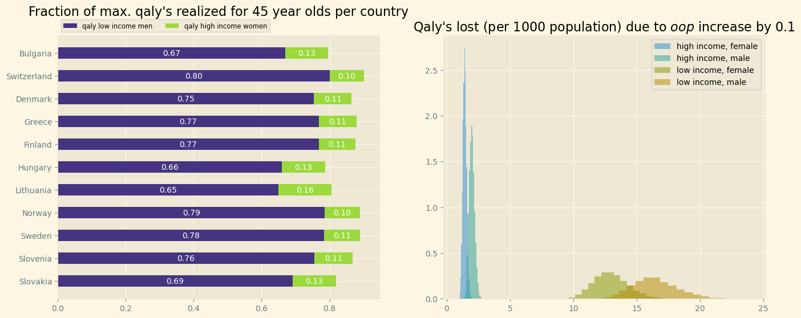

Dynamic effects of health insurance reform
Table of Contents
We estimate a dynamic structural model to assess the long-term health effects of demand-side cost-sharing. Using Eurostat regional data for 11 European countries (2008–2018), we track health transitions across cohorts defined by age, gender, income, and region. Our model shows that increased out-of-pocket payments reduce recovery rates, especially for low-income individuals. The resulting loss in quality-adjusted life years (qaly’s) is significantly larger than what static estimates imply –up to twenty times higher for vulnerable groups. These findings highlight the importance of accounting for long-term dynamics in policy evaluation and underscore the unequal burden of cost-sharing on population health.
JEL codes: I11, I13, I18
Keywords: out-of-pocket payments, mortality, health insurance, poverty, unmet medical needs
How does this work? code
With this document, the reader can retrace the code which we use to produce the results, figures, tables etc. for this paper.
This file is written in Emacs org mode which allows us to combine text and code. The file is exported to pdf (via latex) and to html for the web-version. The web-version –which you are reading now– contains the sections tagged code which are not exported to the pdf version of the paper.
Here you can download the pdf of the paper.
For the export to html we use LaTeX.CSS with some small tweaks to make it compatible with the org-exporter that we use which is based on org-ref. The export of the org file to html is almost perfect, but some issues are not yet resolved. To illustrate, the html export has trouble with latex environments like align, split in equations etc. For the time being this is resolved by using multiple equation environments. Further, whereas latex drops the label on equations that are not cited, the html exporter is not able to do this. Hence, there are more numbered equations in the web-version of the paper. This is all a bit clumsy but otherwise works fine.
We use Python to program the model and PyMC for the Bayesian analysis. All these resources are open source and freely available. If you want to install Python, Anaconda is a good place to start.
To avoid replicating code that is used for different models, we use noweb. This is used as follows. First, we give the code block a name, like code-preamble. When we want to use this code, we call the code block by <<code-preamble>>.
There is a separate file which describes how we get the data from Eurostat.
The repository for the paper can be found here.
preamble code
######################################################### # This file is tangled from the index.org file in the root directory # the author runs the code from the index.org file directly in emacs # if you do not have emacs, you can run the code to generate the trace files # from this file # the file expects the following folder structure to run without problems: # the folder with the data should be located at: ./data/oop_health_data.nc # the trace files are written to ./trace # figures are written to ./figures #########################################################
import matplotlib.pyplot as plt plt.style.use('Solarize_Light2') import numpy as np from numpy.lib.stride_tricks import sliding_window_view import scipy as sc import pandas as pd import pymc as pm from pymc.model.transform.conditioning import do import arviz as az import pytensor import pytensor.tensor as pt import xarray as xr import seaborn as sns from tabulate import tabulate
We use the following versions of pymc and numpy:
print(np.__version__) print(pm.__version__)
2.3.2 5.25.1
loading data
In order to have sufficient data for all our variables we analyze data from 2008-2018. We start with the data from 2008-2020. In the code below we make some further selections like positive population levels and a population that exceeds the number of deaths in a category. At the time of our analysis this narrows down the years to 2008-2018. The categories we are analyzing are indexed by age/gender/region/income as explained below.
We analyze mortality for ages 45-85. At lower ages, mortality is very close to zero; for ages above 85 the number of observations per age group drops rapidly.
low_year = 2008 high_year = 2020 low_age = 45 high_age = 85 ds = xr.open_dataset('./data/oop_health_data.nc') ds
<xarray.Dataset> Size: 22MB
Dimensions: (nuts2: 313, year: 11, sex: 2, age: 99)
Coordinates:
* nuts2 (nuts2) <U4 5kB 'AT11' 'AT12' ... 'UKN0'
* year (year) int64 88B 2008 2009 ... 2017 2018
* sex (sex) <U1 8B 'F' 'M'
* age (age) float64 792B 1.0 2.0 ... 98.0 99.0
country (nuts2) <U14 18kB ...
Data variables:
population (age, sex, year, nuts2) float64 5MB ...
country_code (age, sex, year, nuts2) <U2 5MB ...
HF3_PC_CHE (age, sex, year, nuts2) float64 5MB ...
deaths (age, sex, year, nuts2) float64 5MB ...
percentage_material_deprivation (year, nuts2) float64 28kB ...
TOOEXP (year, nuts2) float64 28kB ...
UNMET (year, nuts2) float64 28kB ...
infant mortality (year, nuts2) float64 28kB ...
number_physicians per inhabitant (year, nuts2) float64 28kB ...
Following python code generates the list my_regions where we have data on population,deaths and where we have at least one year (per region) with information on UNMET or where UNMET is not equal to zero for all years.
# my_regions = [] # for r in np.unique(ds.nuts2.values): # A = np.sum(ds.where(ds.nuts2==r,drop=True).population.isnull().values) # B = np.sum(ds.where(ds.nuts2==r,drop=True).deaths.isnull().values) # C = np.sum(np.isnan(np.nanmean(ds.where(ds.nuts2==r,drop=True).UNMET.values,axis=0))) # D = np.sum(np.nanmean(ds.where(ds.nuts2==r,drop=True).UNMET.values,axis=0)==0) # if A + B + C + D == 0: # my_regions.append(r) # my_regions
cohorts = 30 age_matrix = sliding_window_view(np.arange(low_age,high_age+1), cohorts)[:-1] age_indices = age_matrix-low_age my_regions = ['BG31', 'BG32', 'BG33', 'BG34', 'BG41', 'BG42', 'CH01', 'CH02', 'CH03', 'CH04', 'CH05', 'CH06', 'CH07', 'DK01', 'DK02', 'DK03', 'DK04', 'DK05', 'EL30', 'EL41', 'EL42', 'EL43', 'EL51', 'EL52', 'EL53', 'EL54', 'EL61', 'EL62', 'EL63', 'EL64', 'EL65', 'FI1B', 'FI1C', 'FI1D', 'HU11', 'HU12', 'HU21', 'HU22', 'HU23', 'HU31', 'HU32', 'HU33', 'LT01', 'LT02', 'NO01', 'NO02', 'NO03', 'NO04', 'NO05', 'NO06', 'NO07', 'SE11', 'SE12', 'SE21', 'SE22', 'SE23', 'SE31', 'SE32', 'SE33', 'SI03', 'SI04', 'SK01', 'SK02', 'SK03', 'SK04'] ds = ds.where((low_age <= ds.age) & (ds.age <= high_age) &\ (low_year <= ds.year) & (ds.year <= high_year) &\ (ds.nuts2.isin(my_regions)) &\ (ds.country_code != "") &\ (ds.population > 1.0) & (ds.population > ds.deaths), drop=True) ds["TOOEXP"] = ds["TOOEXP"].isel(age=0,sex=0) ds["number_physicians per inhabitant"] = ds["number_physicians per inhabitant"].isel(age=0,sex=0) ds["infant mortality"] = ds["infant mortality"].isel(age=0,sex=0) ds["UNMET"] = ds["UNMET"].isel(age=0,sex=0) ds["UNMET_other"] = ds["UNMET"]-ds["TOOEXP"] ds["percentage_material_deprivation"] = ds["percentage_material_deprivation"].isel(age=0,sex=0) ds
<xarray.Dataset> Size: 2MB
Dimensions: (age: 41, sex: 2, year: 11, nuts2: 65)
Coordinates:
* nuts2 (nuts2) <U4 1kB 'BG31' 'BG32' ... 'SK04'
* year (year) int64 88B 2008 2009 ... 2017 2018
* sex (sex) <U1 8B 'F' 'M'
* age (age) float64 328B 45.0 46.0 ... 84.0 85.0
country (nuts2) <U14 4kB 'Bulgaria' ... 'Slovakia'
Data variables:
population (age, sex, year, nuts2) float64 469kB 5...
country_code (age, sex, year, nuts2) object 469kB 'B...
HF3_PC_CHE (age, sex, year, nuts2) float64 469kB n...
deaths (age, sex, year, nuts2) float64 469kB 1...
percentage_material_deprivation (year, nuts2) float64 6kB nan nan ... 10.0
TOOEXP (year, nuts2) float64 6kB 12.8 ... 0.4
UNMET (year, nuts2) float64 6kB 27.4 ... 6.5
infant mortality (year, nuts2) float64 6kB 9.1 8.0 ... 8.8
number_physicians per inhabitant (year, nuts2) float64 6kB 373.1 ... 344.6
UNMET_other (year, nuts2) float64 6kB 14.6 9.5 ... 6.1
The age_matrix defined above has the following format. In our first year, 2008, we start with people aged 45-74. We follow these age-cohorts over time till 2018 when they are aged 55-84. We summarize this in the paper in Table 1.
print(tabulate(age_matrix, tablefmt="orgtbl"))
| 45 | 46 | 47 | 48 | 49 | 50 | 51 | 52 | 53 | 54 | 55 | 56 | 57 | 58 | 59 | 60 | 61 | 62 | 63 | 64 | 65 | 66 | 67 | 68 | 69 | 70 | 71 | 72 | 73 | 74 | | 46 | 47 | 48 | 49 | 50 | 51 | 52 | 53 | 54 | 55 | 56 | 57 | 58 | 59 | 60 | 61 | 62 | 63 | 64 | 65 | 66 | 67 | 68 | 69 | 70 | 71 | 72 | 73 | 74 | 75 | | 47 | 48 | 49 | 50 | 51 | 52 | 53 | 54 | 55 | 56 | 57 | 58 | 59 | 60 | 61 | 62 | 63 | 64 | 65 | 66 | 67 | 68 | 69 | 70 | 71 | 72 | 73 | 74 | 75 | 76 | | 48 | 49 | 50 | 51 | 52 | 53 | 54 | 55 | 56 | 57 | 58 | 59 | 60 | 61 | 62 | 63 | 64 | 65 | 66 | 67 | 68 | 69 | 70 | 71 | 72 | 73 | 74 | 75 | 76 | 77 | | 49 | 50 | 51 | 52 | 53 | 54 | 55 | 56 | 57 | 58 | 59 | 60 | 61 | 62 | 63 | 64 | 65 | 66 | 67 | 68 | 69 | 70 | 71 | 72 | 73 | 74 | 75 | 76 | 77 | 78 | | 50 | 51 | 52 | 53 | 54 | 55 | 56 | 57 | 58 | 59 | 60 | 61 | 62 | 63 | 64 | 65 | 66 | 67 | 68 | 69 | 70 | 71 | 72 | 73 | 74 | 75 | 76 | 77 | 78 | 79 | | 51 | 52 | 53 | 54 | 55 | 56 | 57 | 58 | 59 | 60 | 61 | 62 | 63 | 64 | 65 | 66 | 67 | 68 | 69 | 70 | 71 | 72 | 73 | 74 | 75 | 76 | 77 | 78 | 79 | 80 | | 52 | 53 | 54 | 55 | 56 | 57 | 58 | 59 | 60 | 61 | 62 | 63 | 64 | 65 | 66 | 67 | 68 | 69 | 70 | 71 | 72 | 73 | 74 | 75 | 76 | 77 | 78 | 79 | 80 | 81 | | 53 | 54 | 55 | 56 | 57 | 58 | 59 | 60 | 61 | 62 | 63 | 64 | 65 | 66 | 67 | 68 | 69 | 70 | 71 | 72 | 73 | 74 | 75 | 76 | 77 | 78 | 79 | 80 | 81 | 82 | | 54 | 55 | 56 | 57 | 58 | 59 | 60 | 61 | 62 | 63 | 64 | 65 | 66 | 67 | 68 | 69 | 70 | 71 | 72 | 73 | 74 | 75 | 76 | 77 | 78 | 79 | 80 | 81 | 82 | 83 | | 55 | 56 | 57 | 58 | 59 | 60 | 61 | 62 | 63 | 64 | 65 | 66 | 67 | 68 | 69 | 70 | 71 | 72 | 73 | 74 | 75 | 76 | 77 | 78 | 79 | 80 | 81 | 82 | 83 | 84 |
country = ds.country.values n_regions = ds.nuts2.values.shape[0] # number of regions n_countries = len(np.unique(ds.country.values)) # number of countries n_ages = ds.age.values.shape[0] # number of ages # Mapping of regions to countries # Example: regions 0, 1 -> country 0; regions 2, 3 -> country 1; regions 4, 5 -> country 2 region_to_country = pd.factorize(country)[0] # Create the matrix (countries x regions) country_region_matrix_01 = np.zeros((n_countries, n_regions)) # 0-1 matrix with a 1 at position cr if region r belongs to country c for r,c in enumerate(region_to_country): country_region_matrix_01[c, r] = 1 # Normalize rows to compute averages per country (across regions) country_region_matrix = country_region_matrix_01 / country_region_matrix_01.sum(axis=1, keepdims=True)
For some country/year combinations we see in the data that OOP (HF3_PC_CHE) equals zero. As in no European country healthcare is completely free, we interpret 0 as a missing observation. With xarray we can turn a 0 into nan by setting da = da.where(da != 0) where da denotes the data array. This is the code we use below for OOP, infant mortality and Unmet. No infant mortality in a region or no unmet medical needs is also highly unlikely; hence a zero value is turned into nan. If Unmet equals zero, the same is true for UNMET_other and TooExp because UNMET = TooExp + UNMET_other.
OOP does not vary with age or gender and hence we can take the average across dimensions (0,1) without losing information. The result is a variable varying over years and across regions. But out-of-pocket varies by country (not by region within a country) and hence we multiply OOP with the country_region_matrix (transformed). This makes sure that OOP_c varies by year and country.
In our empirical analysis we use the standardized version of the number of physicians per 100k inhabitants. Variables like OOP, material deprivation and unmet medical needs are turned from percentages into fractions for the analysis. We also turn infant mortality (per 1000 life-births) into a variable between 0 and 1 by dividing it by 100 (effectively making it infant mortality per 100k life-births).
def standardize(x): return (x-np.nanmean(x))/np.nanstd(x) Population = ds.population.values.astype(int) physicians = standardize(ds['number_physicians per inhabitant'].values) OOP = ds.HF3_PC_CHE.where(ds.HF3_PC_CHE!=0)/100.0 # replaces OOP equal to 0 with nan m_infant = ds['infant mortality'].where(ds['infant mortality']!=0)/100.0 # replaces infant mortality equal to 0 with nan OOP_c = np.dot(OOP.mean(axis=(0,1)),country_region_matrix.T) M = ds.deaths.values.astype(int) Deprivation = ds.percentage_material_deprivation/100.0 Unmet = ds.UNMET.where(ds.UNMET!=0)/100.0 # replaces UNMET equal to 0 with nan TooExp = ds.TOOEXP.where(ds.UNMET!=0)/100.0 Unmet_o = ds.UNMET_other.where(ds.UNMET!=0)/100.0 U_log_odds = np.log((Unmet)/(1-Unmet)) U_o_log_odds = np.log((Unmet_o)/(1-Unmet_o))
creating cohort data
We analyze population and mortality in tensor-format. The dimensions of the tensors P_cohort, M_cohort are calendar year, cohort size (first row in Table 1), gender and region.
c_dim, g_dim, t_dim, r_dim = cohorts, 2, len(ds.year), n_regions n_dim = n_countries P_cohort = np.zeros((t_dim, c_dim, g_dim, r_dim)) M_cohort = np.zeros((t_dim, c_dim, g_dim, r_dim)) for offset in range(c_dim): for g in range(g_dim): for r in range(r_dim): P_cohort[:,offset,g,r] = np.diagonal(Population, axis1=0, axis2=2, offset=-offset)[g,r,:] M_cohort[:,offset,g,r] = np.diagonal(M, axis1=0, axis2=2, offset=-offset)[g,r,:]
We use the following moments to specify our priors for missing values in these variables. To deal with missing values in Deprivation we model it as a distribution from which we draw missing values. Such a distribution cannot have a standard deviation of zero and hence we add a small number to the standard deviation to avoid this. See section for a discussion of missing values.
There are four regions in Norway on which we have no information at all about the number of physicians. For these regions we set mean_physician equal to the average number of physicians in Norway and std_physician equal to the average standard deviation for Norway.
Finally, to define the log-odds of mortality (number of deaths M over population P) we add 1 to M to avoid taking the logarithm of zero.
mean_depr = Deprivation.mean(axis=(0)).values std_depr = Deprivation.std(axis=(0)).values + 0.0001 mean_oop_c = np.nanmean(OOP_c,axis=0) std_oop_c = np.nanstd(OOP_c,axis=0) mean_m_infant = np.nanmean(m_infant,axis=0) std_m_infant = np.nanstd(m_infant,axis=0) mean_physician = np.nanmean(physicians,axis=0) # mean over years std_physician = np.nanstd(physicians,axis=0) # std over years norway = ['NO' in r for r in ds.nuts2.values] mean_norway = np.nanmean(mean_physician[norway]) mean_physician = np.nan_to_num(mean_physician,nan=mean_norway) std_norway = np.nanmean(std_physician[norway]) std_physician = np.nan_to_num(std_physician,nan=std_norway) log_odds_mort = np.log(((1+M)/Population)/(1-((1+M)/Population))) mort_c = np.log(np.tensordot(((1+M_cohort)/P_cohort), country_region_matrix.T, axes=([3],[0]))/(1- np.tensordot(((1+M_cohort)/P_cohort),\ country_region_matrix.T, axes=([3],[0])))) # varies by age, cohorts, gender, country gender_effect_π = (mort_c.mean(axis=(0,1,3))-mort_c.mean(axis=(0,1,2,3))) # varies by gender country_effect_π = (mort_c.mean(axis=(0,1,2))-mort_c.mean(axis=(0,1,2,3))) # varies by country
/var/folders/g3/0hgyvgbn6x3105r_s_rgnrx40000gn/T/ipykernel_11128/260719900.py:7: RuntimeWarning: Mean of empty slice mean_physician = np.nanmean(physicians,axis=0) # mean over years /Users/janboone/anaconda3/envs/pymc_env/lib/python3.12/site-packages/numpy/lib/nanfunctions.py:1879: RuntimeWarning: Degrees of freedom <= 0 for slice. var = nanvar(a, axis=axis, dtype=dtype, out=out, ddof=ddof,
1. Introduction
Healthcare policy decisions often unfold over long time horizons, yet much of the empirical evidence on health insurance reform focuses on short-run outcomes. In particular, studies of demand-side cost-sharing typically rely on difference-in-differences (DiD) designs that estimate health effects over a narrow window around the implementation of a policy. While these approaches yield credible short-run causal estimates, they are poorly suited to capturing the cumulative, long-term consequences of forgone care, especially when mortality is used as the outcome of interest.
This paper takes a dynamic approach to analyzing the health effects of cost-sharing. We develop and estimate a structural model of health transitions, mortality, and insurance generosity using regional-level Eurostat data from 11 European countries over the 2008–2018 period. Our framework follows cohorts by age, gender, region, and income, distinguishing between individuals in high and low health states, and modeling transitions using a Markov process. Importantly, we allow treatment probabilities –and thus recovery rates– to depend on out-of-pocket spending and unmet medical needs. This enables us to quantify both short- and long-run effects of cost-sharing on mortality.
We show that increases in out-of-pocket costs lead to reductions in health, disproportionately affecting low-income populations. Crucially, the dynamic effects are an order of magnitude larger than static DiD estimates would suggest. Our results highlight a key policy evaluation trade-off: methods that yield clean identification in the short run may vastly understate the true long-run burden of cost-sharing, particularly for the most vulnerable groups.
Our estimated model fits the data well and replicates a number of stylized facts. Women have higher health status than men and people on high income higher than people in poverty. The probability of falling ill increases with age. Although there is uncertainty about the parameter estimates, there is an unambiguous ordering of countries in terms of expected qaly’s for 45 year olds; over the 2008-2018 period Switzerland has the highest expected qaly’s and Hungary, Bulgaria and Lithuania the lowest.
We contribute to the literature on the health effects of demand-side cost-sharing by emphasizing dynamic consequences and the disproportionate impact on low-income individuals.
Several studies have established causal effects of health insurance on mortality using individual-level U.S. data and policy variation from the Affordable Care Act (ACA). For instance, the Medicaid expansions have been shown to reduce mortality using DiD approaches (Borgschulte and Vogler 2020; Miller, Johnson, and Wherry 2021). However, these studies focus on short-run effects –typically two to four years post-reform– and do not capture long-run health dynamics.
Other studies also link higher out-of-pocket (oop) costs to reduced healthcare use and higher mortality (Chandra, Flack, and Obermeyer 2021), but again only in a static or within-year framework. Similarly, Goldin, Lurie, and McCubbin (2020) find mortality effects in an RCT encouraging ACA compliance, but focus on a two-year window and individuals aged 45–64.
Our contribution differs in three main ways. First, we use European data, where insurance systems are more homogeneous and nearly universal –over 99% of the population is typically covered (see the entry on Health insurance coverage with Government/compulsory health insurance from the OECD Data Explorer). This allows for a clearer link between policy variation and health outcomes at the population level.
Second, we estimate a dynamic structural model tracking health status transitions over time. This enables us to compare long-run effects of cost-sharing with short-run DiD-style estimates. Our results show dynamic effects for low-income groups are magnitudes larger than static ones. We illustrate this by using the estimation method in Finkelstein and McKnight (2008) to explain the difference in detail.
Third, by using EU-SILC data on unmet medical needs, we explore a concrete mechanism: individuals forgoing care due to cost, especially at low incomes. This aligns with previous findings on liquidity constraints and care deferral (Gross, Layton, and Prinz 2020; Nyman 2003). While high-income individuals may also forgo treatment, it is less driven by financial barriers (Brot-Goldberg et al. 2017; Chandra, Flack, and Obermeyer 2021). Our results reflect this, showing much smaller effects in that group.
The next section presents a dynamic model of health status and mortality. Then we describe the Eurostat data that we use. We explain the empirical model that we estimate. Estimation results are presented and we conclude with a discussion of the policy implications. The appendix contains more details on our data and estimation. The online appendix is the html version of this paper which includes –per section– the python code that is used in each section’s analysis.1 This is an advantage of using data at the regional level. The repository contains the python code that gets the data from Eurostat so that each step of this analysis can be replicated.
2. Theory
The idea of our dynamic model is to follow a cohort aged \(a\) at time \(t\) across calendar years to age \(a+1\) and year \(t+1\). We capture this dynamic with a straightforward Markov model. The model that we estimate is illustrated in Figure 1. We follow individuals from age 45 to age 85. Let’s denote the age at which we start following an individual by \(a=0\) at time \(t=0\). If this agent is healthy, there is a probability \(\pi\) that the agent falls ill and moves to state ill at age \(a=1\) in period \(t=1\). With probability \(1-\pi\) the agent stays healthy also at age \(a=1\). For an agent in the unhealthy state, there is a probability \(\sigma\) that she is cured and becomes healthy at age \(a=1\). With probability \(\delta\) she dies and with probability \(1-\sigma-\delta\) she remains in the unhealthy state at \(a=1\). Finally, death is an absorbing state.
Figure 1: Markov chain model
Instead of deriving the steady state outcome of the model, we estimate parameters using the underlying difference equation. Focusing just on age for the moment to ease notation, the model implies the following difference equation. Let \(\iota_a\) denote the fraction of people aged \(a\) who are ill and \(1-\iota_a\) the fraction who are healthy, then \(\iota_a\) evolves over age (and time) as:
\begin{equation} \label{org628d60c} \iota_{a+1} = ((1-\sigma-\delta) \iota_a + \pi_a (1-\iota_a))/(1-\delta \iota_{a}) \end{equation}and \(\delta \iota_a\) people die at age \(a\). In words, the fraction of people ill aged \(a+1\) equals the fraction ill aged \(a\) who do neither recover to the healthy state nor die plus the fraction of healthy people who fall ill. We normalize by \(1-\delta \iota_a\) to ensure that the fractions ill and healthy add up to one.
We differentiate the fraction ill, \(\iota_a\), by region/year/gender/income. If we add all the sub/superscripts we get \(\iota_{atr}^{ij}\) for age \(a\) in year \(t\) and region \(r\) among gender \(i \in \{f,m\}\) and low/high income \(j \in \{l,h\}\). Let \(\alpha_{tr}\) denote the fraction of people on low income in region \(r\) and year \(t\) which is available in our data. We observe in our data mortality \(\mu_{atr}^{i}\), the fraction of females/males \(i\) who die at age \(a\) in year \(t\) in region \(r\). In terms of our model this is given by
\begin{equation} \label{org2b148dd} \mu_{atr}^i = \alpha_{tr} \delta \iota_{atr}^{il} + (1-\alpha_{tr}) \delta \iota_{atr}^{ih} \end{equation}As we do not observe \(\iota\) directly in our data, we have to estimate the starting points of the fraction of people initially ill, \(\iota_0\), in order to solve the difference equations over time. Our estimates of \(\iota_0\) vary by age/gender/region/income. The reason \(\iota_0\) varies by age is illustrated in Table 1. Differentiated by gender/region/income we follow the cohorts aged 45-74 over time until they are aged 55-84. The data section below motivates this choice. Hence we estimate the initial values \(\iota_0\) for the ages 45-74 in the year 2008. Then we apply equation \eqref{org628d60c} to determine the development of \(\iota_a\) over time as cohorts get older.
| year | age | |||||||||||
|---|---|---|---|---|---|---|---|---|---|---|---|---|
| 2008 | 45 | 46 | 47 | 48 | … | 68 | 69 | 70 | 71 | 72 | 73 | 74 |
| 2009 | 46 | 47 | 48 | 49 | … | 69 | 70 | 71 | 72 | 73 | 74 | 75 |
| 2010 | 47 | 48 | 49 | 50 | … | 70 | 71 | 72 | 73 | 74 | 75 | 76 |
| 2011 | 48 | 49 | 50 | 51 | … | 71 | 72 | 73 | 74 | 75 | 76 | 77 |
| 2012 | 49 | 50 | 51 | 52 | … | 72 | 73 | 74 | 75 | 76 | 77 | 78 |
| 2013 | 50 | 51 | 52 | 53 | … | 73 | 74 | 75 | 76 | 77 | 78 | 79 |
| 2014 | 51 | 52 | 53 | 54 | … | 74 | 75 | 76 | 77 | 78 | 79 | 80 |
| 2015 | 52 | 53 | 54 | 55 | … | 75 | 76 | 77 | 78 | 79 | 80 | 81 |
| 2016 | 53 | 54 | 55 | 56 | … | 76 | 77 | 78 | 79 | 80 | 81 | 82 |
| 2017 | 54 | 55 | 56 | 57 | … | 77 | 78 | 79 | 80 | 81 | 82 | 83 |
| 2018 | 55 | 56 | 57 | 58 | … | 78 | 79 | 80 | 81 | 82 | 83 | 84 |
The remainder of the section explains how \(\pi,\delta,\sigma\) vary with age/year/gender/region/income. First, the probability of falling ill \(\pi\) varies by age/gender/country/income. We know that older people tend to be less healthy than young people, women tend to live longer than men, longevity varies by country and people on low income tend to have lower health status than people on high income. We allow \(\pi\) to vary along these dimensions to capture these stylized facts.
Second, once people are in state “ill” we assume that their probability of death \(\delta\) is the same across age/gender/income. We do allow \(\delta_c\) to vary by country as some healthcare systems may be better in prolonging life for the ill than systems in other countries.
A final source of variation is the probability \(\sigma\) with which people recover to full health. This probability \(\sigma\) is determined by the probability of treatment and the quality of treatment conditional on being treated. We have data on unmet medical needs. Reasons for unmet medical needs, that is reasons why people forgo treatment include waiting lists, hospital too far away, afraid of treatment. The motivation that we focus on is that the treatment is skipped because it is too expensive. Let \(\upsilon \in [0,1]\) denote the fraction of people who have unmet medical needs. We write this as the sum of the fraction of people who indicate that treatment is too expensive, \(\tau\), and the fraction of people who give other reasons, \(\upsilon_0\).
\begin{equation} \label{org4e7330a} \upsilon = \upsilon_0 + \tau \end{equation}We expect that \(\tau\) is increasing in the fraction of healthcare expenditures that people pay out-of-pocket, \(oop\), where \(oop\) is measured as expenditure paid out-of-pocket over total healthcare expenditure. We interpret this as capturing the generosity of a country’s health insurance system. We use a linear approximation of this relation:
\begin{equation} \label{org1c258d1} \tau = \zeta oop \end{equation}If healthcare is completely free at point-of-service, \(oop=0\) and \(\tau=0\): with free healthcare, no one forgoes treatment because it is too expensive. At the other extreme, no health insurance at all: everything is paid out-of-pocket: \(oop=1\). Then a fraction \(\zeta \in [0,1]\) will indicate they forgo treatment because it is too expensive.
We allow \(\zeta\) to depend on income with \(\zeta^l \geq \zeta^h\). We expect people on low income to react more strongly to an increase in \(oop\) than people on high income. Also people on low income are more likely to avoid treatment for other reasons: \(\upsilon_0^l \geq u_0^h\). To illustrate, people on low income may be less skilled, say, in navigating waiting lists or find it more difficult to travel to a hospital that is further away (or even abroad).
If someone gets treatment, the probability of recovering to full health is given by \(\lambda\). Hence, we write the probability of recovery \(\sigma\) as
\begin{equation} \label{org6e9dd24} \sigma = \sigma_0 + \lambda (1-\upsilon) \end{equation}where \(\sigma_0\) is the probability that someone recovers without treatment. The parameter \(\lambda\) captures the quality of care which we allow to vary by region and year in ways explained below.
We consider two applications of our model. First, as a summary statistic of health we calculate the expected quality adjusted life-years (qaly’s) of 45 year olds till they are 85. We normalize the value of a life-year in full health to 1.0 and set the qaly for a year being ill equal to \(\theta \in \langle 0, 1]\). The value of a “life-year when dead” is normalized to 0.0. To make this qaly calculation, we keep track of the size of the groups healthy and ill as follows:
\begin{equation} \label{org8fa3ecb} N^{healthy}_{a+1} = (1-\pi_a) N^{healthy}_a + \sigma N^{ill}_{a} \end{equation}and
\begin{equation} \label{org757095d} N^{ill}_{a+1} = \pi_a N^{healthy}_{a} + (1-\sigma-\delta) N^{ill}_{a} \end{equation}where we start with 45 year olds at \(a=0\) and calculate up to age \(A\) (corresponding to 85 year olds). In contrast to equation \eqref{org628d60c} we do not normalize \(N^{ill}_a + N^{healthy}_a = 1\); indeed, the point is that we lose life-years as age increases. As above \(N^{healthy}_{a},N^{ill}_{a},\pi_a,\sigma,\delta\) vary with gender/region/income.
We then calculate expected quality adjusted life-years from age 1 to \(A\) as the undiscounted sum of qaly’s:2
\begin{equation} \label{org5faadf5} Q = \sum_{a=1}^{A} N^{healthy}_a + \theta N^{ill}_{a} \end{equation}Second, we consider the effect on qaly’s of an increase in demand-side cost-sharing \(\Delta oop > 0\). For this, we calculate qaly’s in the baseline outcome, \(Q_0\) and compare it with the outcome where the fraction of people with unmet medical needs increases with \(\Delta \upsilon = \zeta \Delta oop\). We denote the qaly’s in this outcome by \(Q_1\). The loss of qaly’s due to increased demand-side cost-sharing is given by:
\begin{equation} \label{org3970a1a} \Delta Q = Q_0 - Q_1 \end{equation}In words, suppose there was a reform in year \(t=0\) which increased \(oop\). After the reform we follow the cohort aged \(a=0\) over time till age \(a=A\) and calculate their qaly’s, \(Q_1\). We compare these qaly’s with the counterfactual where \(oop\) was not changed, \(Q_0\). We denote this the dynamic comparison.
We compare this dynamic analysis with the following static one. Instead of following an age cohort over \(A\) calendar years, we consider \(A\) ages one period after the reform and denote their qaly’s by \(\tilde Q_1\). That is, the equation for \(\tilde Q\) is comparable to \eqref{org5faadf5} except that in equation \eqref{org5faadf5} both age \(a\) and calendar year \(t\) vary over the summation. With \(\tilde Q\) calendar year is fixed at \(t=1\) (with the reform happening in calendar year \(t=0\)). We then compare \(\tilde Q_1\) with the qaly’s these \(A\) age groups would have received under the counterfactual where \(oop\) is unchanged, \(\tilde Q_0\).
To illustrate with Table 1: we start with ages 45-74 at \(t=0\). We have the reform and calculate \(\tilde Q_1\) for the second row in the table (ages 46-75). Then we compare this to qaly’s for the second row under the counterfactual of no change in \(oop\). We argue that this captures the estimate made by an event study like a DiD analysis, say where the reform was introduced in one region but not in another region. The DiD approach would then control for year fixed effects.
This type of analysis can identify the causal effect convincingly but is usually applied for a couple of years only. For instance, because in later years the reform is introduced in other regions as well. Or because over time other factors may change causing a bias in the estimates based on the comparison of the regions.
Theoretically, it is plausible that the dynamic estimate exceeds the static one. In a model where stocks (of healthy and ill) determine the state of the system and its development over time, ignoring these dynamic effects is likely to cause an under-estimation of the effect on qaly’s or mortality. With our estimated model we can quantify the difference between the static and dynamic estimates.
2.1. Markov chain graph code
digraph ER {
fontname="Helvetica,Arial,sans-serif"
node [fontname="Helvetica,Arial,sans-serif" fontsize="16"]
edge [fontname="Helvetica,Arial,sans-serif" fontsize="16"]
layout=sfdp
node [shape=ellipse]; a; b; death;
a [label="healthy"]
b [label="ill"]
a -> b [label="π\n",len=0.500];
b -> a [label=" σ",len=0.500];
b -> death [label="δ\n",len=0.00];
}
3. Data
The data that we use is from Eurostat’s regional database and provides for NUTS 2 regions population size and number of deaths per age/gender category. In principle, we have data on 11 countries and 65 regions for the 11 years 2008-2018 and ages 45-84 for women and men. The years 2008-2018 were chosen because, at the time of the analysis, for most variables and regions data was available from 2008 onward till 2018. The age range was chosen with the idea that mortality starts to increase from 45 years onward and number of observations per region drop significantly from age 85 onward. Finally, NUTS 2 regions were selected where there was at least one observation for unmet medical needs over the years and where the number of deaths during the year does not exceed the population size at the start of the year.
Table 2 shows the summary statistics for our variables. We briefly discuss the main variables, the appendix provides more detail. We have more than 40k observations for population and deaths per age/gender/year/region category.3 We have missing observations and explain below how we deal with these in our Bayesian setting.
The average population size per region-age-gender category is about 6000 and the average number of deaths 90. Median population size per category equals 5300 and median number of deaths 62. In our data, the percentage of people dying in a NUTS 2/year/age/gender category (mortality) equals 2% on average with a maximum of 17.3% for some region and age combination. The material deprivation measure (denoted deprivation) comes from the EU statistics on income and living conditions (EU-SILC) survey. It refers to the enforced inability to pay unexpected expenses, afford adequate heating of the home, durable goods like a washing machine etc. This variable captures the idea that people may feel forced to forgo (valuable) treatment because it is too expensive.4 The mean deprivation rate across regions and years equals 10%. Some regions have (almost) no people in deprivation, while in others 55% of people live in deprivation. The median rate is around 3%.
Also from the EU-SILC survey, we use the variable capturing unmet medical needs because the forgone treatment was too expensive (too exp). The variable unmet measures percentage of people in need of healthcare that postpone or forgo treatment because it is either too expensive, the hospital is too far away, there is a waiting list for the treatment, the patient hopes that symptoms will disappear without treatment, the patient is afraid of treatment or has no time to visit a physician. The mean fraction of people forgoing treatment because it is too expensive equals 1.5%, while the mean fraction of people with unmet medical needs (because it is too expensive or other reasons) equals 6.5%. In some regions the fraction of people forgoing treatment because it is too expensive goes up to almost 20% and the fraction of people with unmet medical needs to almost 30%.
For the model application considering the effect of demand-side cost-sharing on health and mortality, healthcare quality could be a collider. Indeed, if government resources are reduced, there could be both an increase in out-of-pocket payments and a reduction in healthcare quality (by reducing investments in technology and/or reducing the number of physicians). This reduction in quality would also affect health and mortality thereby confounding the healthcare demand effect of out-of-pocket spending. We use two variables to control for the quality of care. First, infant mortality is a well known measure for the quality of a healthcare system. Moreover, infant mortality is not directly related to our measure of mortality which starts at age 45. On average there are almost four dead infants (younger than one year of age at death) per 1000 live births. But for some regions this almost reaches 16 per 1000 live births. The second quality measure is the number of physicians per 100k inhabitants. On average there are 380 physicians per 100k inhabitants but this varies between regions from 180 to 800. We view this as an approximate measure of resources available for healthcare in a region. Finally, we use the fraction of healthcare expenditure paid out-of-pocket as a signal of how generous health insurance is. This captures country wide policy. On average people pay a bit more than 20% out-of-pocket but this varies from 12% in some countries to more than 40% in others.
| count | mean | std | min | median | max | |
|---|---|---|---|---|---|---|
| population | 42900 | 5961.0 | 3788.7 | 574.0 | 5286.0 | 30491.0 |
| deaths | 42900 | 88.9 | 83.7 | 0 | 62.0 | 867.0 |
| mortality (%) | 42900 | 1.8 | 1.9 | 0 | 1.2 | 17.3 |
| deprivation (%) | 481 | 9.9 | 13.3 | 0 | 2.8 | 55.2 |
| too expensive (%) | 527 | 1.5 | 2.6 | 0 | 0.5 | 18.4 |
| unmet (%) | 527 | 6.4 | 4.6 | 0.7 | 5.1 | 28.1 |
| infant mortality (\textperthousand) | 705 | 3.8 | 2 | 0.8 | 3.4 | 15.8 |
| physicians per 100k inhab. | 594 | 379.4 | 108.6 | 180 | 363.3 | 807.9 |
| out-of-pocket (%) | 55 | 22.8 | 9.5 | 12.0 | 18.9 | 43.2 |
3.1. data code
The following python code generates Table 2 with summary statistics. The noweb notation <<code-preamble>> runs the code from Listing 2 into the python cell without using copy/paste.
<<code-preamble>> <<code-data>> <<code-selection>> stat_list = [] def summary_statistics(var,name,stat_list=stat_list): return stat_list.append([name,np.sum(~np.isnan(var)),np.nanmean(var).round(decimals=1),np.nanstd(var).round(decimals=1),np.nanmin(var).round(decimals=1),np.nanmedian(var).round(decimals=1),np.nanmax(var).round(decimals=1)]) summary_statistics(P_cohort,'population') summary_statistics(M_cohort,'deaths') summary_statistics(M_cohort/P_cohort*100,'mortality (%)') variables = [Deprivation.values*100,TooExp.values*100,Unmet.values*100,m_infant.values*100,ds['number_physicians per inhabitant'].values,OOP_c*100] names = ['deprivation (%)', 'too expensive (%)','unmet (%)','infant mortality (\\textperthousand)','physicians per 100k inhab.','out-of-pocket (%)'] for i in range(len(variables)): summary_statistics(variables[i],names[i]) df = pd.DataFrame(stat_list,columns= ['','count','mean','std','min','median','max']) headers = ['count','mean','std','min','median','max'] print(tabulate(df,headers,tablefmt="orgtbl",\ colalign=("left","left", "right", "right", "right", "right", "right", "right")))
4. Estimation
We estimate the model using Bayesian methods. Here we present the equations of the model. The online appendix contains the details on the choice of priors and the pymc code of the model. Further, we explain how the Bayesian algorithm deals with missing observations.
We present the model in reverse order. We observe the number of deaths \(m\) and the population size \(n\) per age/gender/region/year dimensions. We model the probability of death \(\mu\) and \(m\) has a Binomial distribution:
\begin{equation} \label{org9f37d5f} m_{atr}^{i} = Binomial(n_{atr}^{i},\mu_{atr}^{i}) \end{equation}where \(\mu_{atr}^i\) is given by equation \eqref{org2b148dd}. Poverty \(\alpha_{tr}\) per region and time period is observed in the data using the material deprivation measure discussed in the previous section. The fraction of people ill \(\iota_{atr}^{ij}\) varies by age \(a\), gender \(i\), time \(t\), region \(r\) and income level \(j\). This fraction \(\iota\) follows from difference equation \eqref{org628d60c}. Before we explain how this equation is estimated, recall that the estimate of \(\delta_{c}\) is allowed to vary by country \(c\).
To solve differential equation \eqref{org628d60c}, we start by estimating the initial condition \(\iota_{a0r}^{ij}\) for ages \(a=0-30\) (i.e. ages 45-74) in year \(t=0\) (2008) per region \(r\), gender \(i\) and income category \(j\).
Next, we need to estimate the probability of falling ill \(\pi_{ar}^{ij}\) which we assume to be additive in age, region, gender and income fixed effects in log-odds space. That is we add together the log-odds effects for age, gender, region and income and apply the inverse logit function \(e^x/(1+e^x)\) to the sum of these log-odds. This gives the probabilities \(\pi_{ar}^{ij} \in \langle 0,1 \rangle\).
The probability \(\sigma = \sigma_0 + \lambda (1-\upsilon)\) of recovering to full health in equation \eqref{org6e9dd24} is estimated as follows. We estimate the probability \(\sigma_0 \in \langle 0,1 \rangle\) of recovering to health without medical intervention. Further, we observe the fraction of people who indicate that they have unmet medical needs \(\upsilon_{tr}\) at the year/region level. For the ill who do get treatment, \(1-\upsilon\), there is a probability \(\lambda\) of full recovery. The logg-odds of \(\lambda\) are the sum of three effects: (i) year fixed effects, capturing that over time the quality of care improves due to technological progress, (ii) infant mortality and (iii) number of physicians per 100k inhabitants. The latter two capture the variation across time and region in quality of care. Again we use the inverse logit function to turn the log-odds into a probability \(\lambda\).
We expect both the probability of unmet medical needs because it is too expensive, \(\tau\), and for other reasons, \(\upsilon_o\), to be bigger for low incomes than for high incomes. If your income is higher, you are less likely to skip a treatment because it is too expensive: \(\tau^j = \zeta^j oop\) with \(\zeta^l \geq \zeta^h\) and the fraction of medical expenditure paid out-of-pocket \(oop_{tc}\) varies with country and time. Further, also with the other reasons for unmet medical needs (like waiting lists) we expect \(\upsilon_o^l \geq \upsilon_o^h\). Hence, we find that
\begin{equation} \label{org8dbf3ff} \upsilon_{tr} = \alpha_{tr} (\zeta^{l} oop_{tc} + \upsilon_{otr}^l) + (1-\alpha_{tr}) (\zeta^h oop_{tc} + \upsilon_{otr}^{h}) \end{equation}where we observe \(\tau_{tr} = (\alpha_{tr} \zeta^l + (1-\alpha_{tr}) \zeta^h) oop_{tc}\) and \(\upsilon_{otr} = \alpha_{tr} \upsilon^l_{otr} + (1-\alpha_{tr}) \upsilon^h_{otr}\).
Hence we find
\begin{equation} \label{org8a0538d} \sigma_{tr}^{j} = \sigma_{0} + \lambda_{tr} (1-\zeta^j oop_{tc} - u_{otr}^{j}) \end{equation}Given that we estimate the initial conditions \(\iota_0\) and the parameters \(\pi_a, \sigma, \delta\) we can solve differential equation \eqref{org628d60c} to find \(\iota_{atr}^i\) and thus calculate the probability of death \(\mu_{atr}^i\) in equation \eqref{org2b148dd} as input in the Binomial distribution \eqref{org9f37d5f}.
One of the conceptual advantages of a Bayesian model is that there is no clear distinction between data and parameters. Both are basically distributions. This comes to the fore when dealing with missing values which are prevalent in our data as shown in Table 2. The Markov Chain Monte Carlo (MCMC) algorithm generates the posterior distribution of parameters by drawing samples from this distribution. For each parameter we will have 4 chains of 2000 draws, that is 8000 draws from the posterior distribution. When an observation is missing, the algorithm will randomly draw the observation from a pre-defined distribution. This implies that each draw is different signalling the uncertainty that surrounds the missing observation. This is better than imputing the value of the observation as the latter suggests that we are as certain about the imputed value as we are about an observed value; which is obviously not the case.
For variables based on summation, it is natural to assume a normal distribution for missing observations. The expectation (standard deviation) of this distribution is then given by the average value (standard deviation) of the observations that we do have for this region or country.
To improve the efficiency of the algorithm in solving the difference equation while estimating the parameters, the data is not in (two dimensional) dataframe format. Instead we work with multi-dimensional tensors. To illustrate, the tensors with the population and deaths data are 4-dimensional tensors with coordinates age/gender/year/region. The difference equation then iterates over age and calendar year using pytensor’s scan function. See the online appendix for details.
4.1. Identification strategy and limitations
Our identification strategy is grounded in a structural modeling approach rather than exogenous quasi-experimental variation. We estimate a dynamic Markov model of health status transitions using cohort-level Eurostat data, where the key policy variable, \(oop\), varies across countries and over time. We link these variations in cost-sharing to observed differences in recovery rates and mortality, conditional on region, age, gender, income, time fixed effects and variables capturing healthcare quality.
The strength of this approach lies in its ability to simulate long-run effects by modeling underlying health dynamics. Unlike DiD estimators, which compare limited time points before and after a reform, our framework accumulates the effects of delayed or forgone treatment over multiple years. It also allows us to examine heterogeneity by income and gender and to propagate parameter uncertainty through Bayesian inference.
However, this comes with trade-offs. Our identification of the effects of cost-sharing relies on structural assumptions, notably the specification of the Markov transition probabilities. Further, \(oop\) variation is not derived from a policy discontinuity or random assignment. As such, our estimates could be biased by omitted variables that simultaneously influence health and insurance \(oop\) (e.g. austerity-induced cuts to both healthcare quality and insurance generosity). We address this concern through robustness checks: (i) the inclusion of unemployment and education to capture lifestyle differences between regions and GDP per capita and imaging device availability as additional controls for healthcare quality and (ii) a placebo test using traffic mortality which should not have the dynamic structure of mortality that we analyse but can be negatively affected by fiscal austerity.
While these checks support the plausibility of our identification, we acknowledge that the approach does not deliver the same level of internal validity as natural experiments. Our findings should therefore be interpreted as credible simulations under a structural model, rather than precise causal point estimates in the experimental sense.
4.2. estimation code code
In estimating the model we follow the age cohorts 45-74 over time from 2008 to 2018 when they are aged 55-84. For each age/gender/income/region category we split the population into low and high health status. We use pymc’s scan function to follow the cohort over time according to the difference equation \eqref{org628d60c}. The function transition takes as inputs \(\pi,\sigma,\delta\) and this period’s fraction of ill. The function returns next period’s fraction of ill.
The dimensions for observed variables (“data”) and parameters are: age, gender, year, region and income. Not all variables or parameters have all these dimensions. E.g. some only vary by country (not region), some parameters are constant or only vary by year etc.
For our first year (2008) we specify the initial fraction of ill, \(\iota_0\). This parameter needs to be estimated and varies by cohort (45-74), gender, region and income. Most probabilities/fractions (like \(\iota_0\) and \(\delta\)) are specified in log-odds terms.
The probability of falling ill is specified as the addition of age, gender, country and income effects (additive in log-odds space).
Then the code specifies the distributions of a number of variables for which we have missing values. This is the case for the deprivation variable, OOP, unmet medical needs in total and for reasons other than the treatment is too expensive. Finally, there are also missing values for infant mortality and the number of physicians per 100k inhabitants. For variables that are between 0 and 1, we either use the clip function or specify a Beta distribution. For the Beta distribution we use the parametrization with mean effect mu and number of observations nu.
The expected number of people with unmet medical needs equals the sum of unmet needs for other reasons plus the fraction of people forgoing treatment because it is too expensive, \(\tau\). We observe \(\tau\) and split it up into \(\tau^l,\tau^h\) such that \(\tau = \alpha \tau^l + (1-\alpha) \tau^h\). Similarly, We observe \(U_o\) and split it up into \(U_o^l, U_o^h\) such that \(U_o = \alpha U_o^l + (1-\alpha) U_o^h\). We do this as follows: \(U_o^j = \xi^j U_o\) with \(\alpha \xi^l + (1-\alpha) \xi^h = 1\) with \(\xi^l = \xi + \varepsilon \geq \xi = \xi^h\). Hence it follows from \(\alpha (\xi + \epsilon) + (1-\alpha) \xi = 1\) that \(\xi = 1-\alpha \varepsilon\) as we model it below in the code.
We know that an increase in oop makes it more likely that people skip treatment because it is too expensive. Hence we specify that \(\zeta^h \geq 0\) (in terms of slope_ζ) and that \(\zeta^l \geq \zeta^h\) using delta_ζ. Both parameters are modelled as HalfNormal to make sure they are non-negative.
We model the log-odds of \(\lambda\) as decreasing in infant mortality and increasing in the number of physicians.
The tensor \(I\) keeps track of the fraction ill per year, cohort, gender, region and income category. Its first “row” is given by \(\iota_0\) which we discussed above.
To determine the probability of death per year, cohort, gender and region, we sum over the income dimension as our data does not specify deaths by income category.
Given this, the number of deaths, M_cohort is a Binomial distribution with parameter \(n\) equal to the population size P_cohort and \(p\) equal to \(\mu\).
def transition(π,σ,I,δ): fit = I*σ+(1-π)*(1-I) ill = π*(1-I)+pt.clip(1-σ-δ,0.0,1.0)*I fraction_ill = ill/(fit+ill) return fraction_ill n_y = 2 # low/high income n_g = 2 # female/male countries = np.array(['Bulgaria', 'Switzerland', 'Denmark', 'Greece', 'Finland', 'Hungary', 'Lithuania', 'Norway', 'Sweden', 'Slovenia', 'Slovakia']) # index: age, gender, year, region, income # for some variables we use country instead of region coords = { "region" : ds.nuts2.values,\ "ages" : ds.age.values,\ "cohort" : age_matrix[0],\ "gender" : ds.sex.values,\ "year" : ds.year.values,\ "income" : ['y_l','y_h'],\ "country": countries,\ # we define dummy dimensions for parameters that do not # vary by this dimension "dummy0": np.arange(1),\ "dummy1": np.arange(1),\ "dummy2": np.arange(1)} with pm.Model(coords=coords) as AR_model: logodds_ι = pm.Normal("logodds_ι",-4.0,1,\ dims=("cohort","gender","region","income"),\ shape=(cohorts,n_g,n_regions,n_y)) ι_0 = pm.Deterministic("ι_0",pm.math.invlogit(logodds_ι),dims=("cohort","gender","region","income")) # ι_0 is used to start the sequence in scan => # no need to add age dimension: we build up the matrix I by following each cohort over the years logodds_δ = pm.Normal("logodds_δ",-2.5,0.05,dims=("country")) # conditional on being ill, same prob. of death # δ is a non_sequence in the scan loop; no need to add age as a dimension δ = pm.Deterministic("δ",pt.dot(pm.math.invlogit(logodds_δ), country_region_matrix_01)[None,None,None,:,None]) # we build up the prior for π logodds_age_π = pm.Normal("logodds_age_π",log_odds_mort.mean(axis=(1,2,3)),log_odds_mort.std(axis=(1,2,3)),dims=("ages")) logodds_sex_π = pm.Normal("logodds_sex_π", gender_effect_π, 0.05, dims=("gender")) logodds_country_π = pm.Normal("logodds_country_π",country_effect_π,0.05, dims=("country")) logodds_π = pm.Deterministic("logodds_π",logodds_age_π[:,None,None] + logodds_sex_π[None,:,None] + pt.dot(logodds_country_π, country_region_matrix_01)[None,None,:]) # prob. of falling ill varies by age, gender and country # the priors do not impose that women tend to be healthier than men # but we do impose that people on low income tend to have low health status (high π) delta_π = pm.HalfNormal("delta_π",sigma=0.05,\ dims=("ages","dummy0","dummy1"),\ shape=(n_ages,1,1)) π = pm.Deterministic("π",pt.stack([pm.math.invlogit(\ logodds_π+ delta_π),\ pm.math.invlogit(logodds_π)],axis=-1), dims=("ages","gender","region","income")) # when we draw missing values for OOP, we should draw the same value for all regions/age/gender in the same country # this we do via oop_c which we later bring back to region dimension with country_region_matrix_01 pov = pm.Normal("pov", mean_depr[None,:], std_depr[None,:], observed=Deprivation,dims=("year","region")) # fraction of people on low income poverty = pt.stack([pt.clip(pov,0,1),1-pt.clip(pov,0,1)],axis=-1) # vector with fraction of low/high income people oop_c = pm.Normal("oop_c", mean_oop_c[None,:], std_oop_c[None,:], observed=OOP_c,dims=("year","country")) oop = pt.dot(oop_c,country_region_matrix_01) slope_ζ = pm.HalfNormal("slope_ζ",sigma=0.05) delta_ζ = pm.HalfNormal("delta_ζ",sigma=0.05) ζ = pm.Deterministic("ζ",pt.stack([(slope_ζ+ delta_ζ),\ (slope_ζ)],axis=-1),dims=("income")) # varies with income τ = pm.Deterministic("τ", ζ[None,:]*oop[:,:,None]) mu_U_o = Unmet_o.mean(axis=0).values[None,:] nu_U_o = pm.Exponential("nu_U_o", 0.05) U_o = pm.Beta("U_o", alpha = mu_U_o*nu_U_o, beta = (1-mu_U_o)*nu_U_o,dims=("year","region"), observed=Unmet_o) mu_U = pt.clip(U_o+pt.sum(poverty*τ,axis=2),0.000001,0.9999) nu_U = pm.Exponential("nu_U", 0.05) U = pm.Beta("U",alpha=mu_U*nu_U, beta=(1-mu_U)*nu_U,dims=("year","region"), observed=Unmet) # λ measures prob. patient heals if treated (i.e. one minus unmet) M_infant = pm.Normal("M_infant",mean_m_infant[None,:],std_m_infant[None,:],dims=("year","region"),observed=m_infant) Physicians = pm.Normal("Physicians",mean_physician[None,:],std_physician[None,:],dims=("year","region"),observed=physicians) lambda_1 = pm.HalfNormal("lambda_1",sigma=0.01) lambda_2 = pm.HalfNormal("lambda_2",sigma=0.01) lamba_0 = pm.Normal("lambda_0",-4.1,0.05,dims=("year")) logodds_λ = pm.Normal("logodds_λ",lamba_0[:,None]-lambda_1*M_infant+lambda_2*Physicians,0.1) λ = pm.Deterministic("λ",pm.math.invlogit(logodds_λ))# λ is between 0 and 1 ε = pm.Beta("ε",1,3) # ε = ξ_l - ξ_h > 0 ξ = 1-poverty[:,:,0]*ε υ = pm.Deterministic("υ", pt.stack([(ξ+ε)*U_o,ξ*U_o],axis=-1) + τ) σ_0 = pm.Beta("σ_0",1,3) σ = pm.Deterministic("σ",pt.clip(σ_0+λ[:,None,None,:,None]*(1-υ)[:,None,None,:,:],0,1)) I = pt.zeros((t_dim,cohorts,n_g,n_regions,n_y)) I = pt.set_subtensor(I[0],ι_0) outputs, updates = pytensor.scan( transition, # age/year is the dynamic part of the model # i.e. first dimension of π sequences=[dict(input=π[age_indices]),dict(input=σ)], # check sequences with order of arguments in =transition= # we loop over the first dimension: age # the initial value for I (at low_age) # outputs_info has no age dimension outputs_info=[dict(initial=ι_0)], # variables that have no age dimension: non_sequences=[δ[0]], ) I = pt.set_subtensor(I[1:],outputs[:t_dim-1]) # μ is probability of death for age/gender/year/region ill = pm.Deterministic("ill",I) μ = pm.Deterministic("μ",(pt.sum(δ*I*poverty[:,None,None,:,:],axis=4)))# aggregate over income mortality = pm.Binomial("mortality",n=P_cohort,p=μ,observed=M_cohort,dims=("year","cohort","gender","region"))
choice of priors
For choosing prior distributions, we use the following rules of thumb. If we know from previous studies or from the model that a parameter is positive, we model the prior distribution as a HalfNormal. To illustrate, we know that people on low income have a lower health status than high income. We model this as low incomes having a higher probability of falling ill delta_π being positive. Similarly, the effect of oop on the fraction of people forgoing treatment because it is too expensive, \(\zeta\), can only be positive: slope_ζ has a HalfNormal distribution. If we have no a priori knowledge of the sign of a parameter, we model its prior distribution as a Normal distribution. Finally, we use three ways to make sure that a parameter is between 0 and 1. We model the log offs of the parameters and use the inverse logit to get to probabilities. Second, we use a Beta distribution and third we clip the parameter to get a value between 0 and 1. The choice here is partly arbitrary and driven by coding convenience.
Further, we use regularizing (“seat-belt”) priors: the mode of the prior distribution is set to 0 and we choose a relatively small standard deviation. The parameter then only “significantly” deviates from 0 if there is strong evidence for this in the data.
From prior distributions on individual parameters it is hard to understand what the interplay is between these parameters. How do all these distributions add up to the mortality measure we are ultimately interested in?
To get an idea whether or not the choice of prior distributions in the model makes sense, we can compare the distribution of mortality generated by priors only (prior predictive distribution) with the observed distribution of mortality in the data.
We first generate the prior predictive of the model.
prior_samples = pm.sample_prior_predictive(samples=500, model=AR_model)
Sampling: [M_infant_observed, M_infant_unobserved, Physicians_observed, Physicians_unobserved, U_o_observed, U_o_unobserved, U_observed, U_unobserved, delta_ζ, delta_π, lambda_0, lambda_1, lambda_2, logodds_age_π, logodds_country_π, logodds_sex_π, logodds_δ, logodds_ι, logodds_λ, mortality, nu_U, nu_U_o, oop_c_observed, oop_c_unobserved, pov_observed, pov_unobserved, slope_ζ, ε, σ_0]
Then we plot the prior predictive with the observed mortality in the data.
plt.hist( prior_samples.prior_predictive.mortality.values.flatten(),bins=100,density=True,label="prior predictive mortality"); plt.hist(M_cohort.flatten(),bins=100,density=True,alpha=0.7,label="observed mortality") plt.xlim(0,400) plt.xlabel("Number of deaths") plt.ylabel("frequency") plt.title("Distributions of observed and prior predictive mortality") plt.legend();
As the figure shows, before the model “sees the data” its predictions on mortality (across age/gender/regions/year) are in the ball park of observed mortality. The model tends to predict (too) low mortality but this will be fixed once we estimate the parameters below.
sampling
In order to sample from the posterior distribution of our parameters, we call all relevant code blocks above and sample using the Markov Chain Monte Carlo NUTS sampler.
<<code-preamble>> <<code-data>> <<code-selection>> <<code-matrices>> <<code-variables>> <<code-cohorts>> <<code-moments>> <<code-model>> # with AR_model: # idata = pm.sample(draws=2000,target_accept = 0.95) # pm.sample_posterior_predictive(idata,\ # extend_inferencedata=True) # idata.to_netcdf("./trace/baseline_model_lambda.nc")
/var/folders/g3/0hgyvgbn6x3105r_s_rgnrx40000gn/T/ipykernel_88754/85024763.py:84: RuntimeWarning: Mean of empty slice mean_physician = np.nanmean(physicians,axis=0) # mean over years /Users/janboone/anaconda3/envs/pymc_env2/lib/python3.13/site-packages/numpy/lib/_nanfunctions_impl.py:2015: RuntimeWarning: Degrees of freedom <= 0 for slice. var = nanvar(a, axis=axis, dtype=dtype, out=out, ddof=ddof, /Users/janboone/anaconda3/envs/pymc_env2/lib/python3.13/site-packages/pymc/model/core.py:1300: ImputationWarning: Data in pov contains missing values and will be automatically imputed from the sampling distribution. warnings.warn(impute_message, ImputationWarning) /Users/janboone/anaconda3/envs/pymc_env2/lib/python3.13/site-packages/pymc/model/core.py:1300: ImputationWarning: Data in oop_c contains missing values and will be automatically imputed from the sampling distribution. warnings.warn(impute_message, ImputationWarning) /Users/janboone/anaconda3/envs/pymc_env2/lib/python3.13/site-packages/pymc/model/core.py:1300: ImputationWarning: Data in U_o contains missing values and will be automatically imputed from the sampling distribution. warnings.warn(impute_message, ImputationWarning) /Users/janboone/anaconda3/envs/pymc_env2/lib/python3.13/site-packages/pymc/model/core.py:1300: ImputationWarning: Data in U contains missing values and will be automatically imputed from the sampling distribution. warnings.warn(impute_message, ImputationWarning) /Users/janboone/anaconda3/envs/pymc_env2/lib/python3.13/site-packages/pymc/model/core.py:1300: ImputationWarning: Data in M_infant contains missing values and will be automatically imputed from the sampling distribution. warnings.warn(impute_message, ImputationWarning) /Users/janboone/anaconda3/envs/pymc_env2/lib/python3.13/site-packages/pymc/model/core.py:1300: ImputationWarning: Data in Physicians contains missing values and will be automatically imputed from the sampling distribution. warnings.warn(impute_message, ImputationWarning)
5. Results
In this section we present the results of the estimation of the model. Before presenting the outcome of our estimation, we present some (graphical) checks of our model.
5.1. Model fit
A first check of the model is to see whether it fits the data. Figure 2 shows for all our observations the observed number of deaths on the horizontal axis and the predicted number on the vertical axis. Further, for each prediction we add a dashed vertical line representing the 95% prediction interval (of the posterior predictive distribution). The predictions clearly follow the 45-degree line and almost all 95% prediction intervals intersect the 45-degree line. In this sense the model fit seems quite good.
Figure 2: Observed vs predicted number of deaths (per age/gender/region/year) together with the 95% prediction intervals.
Figure 7 in the appendix presents the trace plots and Table 8 r-hat values for estimated parameters. The r-hat values are close to one and the traceplots satisfy the following three criteria. First, the plots in the right column of the figure are stationary; that is, not trending upward or downward. This implies that the posterior mean of the coefficient is (more or less) constant as we sample. Second, there is good mixing which translates in condensed zig-zagging. In other words, the algorithm manages to draw values across the whole domain of the posterior quickly one after the other. Finally, the four chains cover the same regions. This is most easily checked in the left column of the trace plot. The three features are satisfied in the figure. All this indicates that the MCMC algorithm manages to sample the posterior distribution correctly.
To gain an intuition on how the model works, Figure 3 shows a number of estimated outcomes. The top-left panel shows the probability of falling ill, \(\pi\), as a function of age for women and men.5 This probability is quite low around age 45 and increases to 40% for men in their eighties. As shown in the panel below this one, the probability of death –conditional on being ill– is above 10% per year. In other words, falling ill in our model does not refer to a regular cough or breaking a leg. The observation that the average probability of falling ill is higher for men than for women is in line with the observation that women tend to live longer than men. The 95% posterior probability interval shows that there is quite some variation in the probability of falling ill at older ages but that uncertainty is small till age 75. In order not to crowd the figure we do not report the 95% intervals for males but they are of similar magnitude.
The top-right panel shows the country offsets (in log-odds terms) for four countries. There is a clear dichotomy between Switzerland and Norway on the one hand and Lithuania and Hungary on the other. But even between these countries there is hardly overlap between the distributions. Of these four countries, people in Switzerland are least likely to fall ill (at any age) and in Hungary most likely.
Similarly, the probability of dying conditional on being ill, \(\delta_{c}\), varies by country. Of the four countries presented, it is lowest for Denmark and Finland and highest for Hungary and Bulgaria.
Finally, the bottom-right panel shows the fraction of people ill for four categories: people aged 55 and 60 with low/high income. The fraction of people who are ill is higher for low than for high incomes, as one would expect. Also the fraction increases with age. The posterior distributions for these fractions do not overlap.

Figure 3: Summary of selected features of the model. Top left panel shows the age profile for \(\pi\) for women and men. Top right panel shows the country offsetts in the log-odds of \(\pi\) and bottom left panel the probability of death \(\delta_c\) for selected countries. Bottom right panel shows the fraction of two age groups who are in the low health state for low and high incomes.
5.2. Analysis
The analysis in this section makes the following points. First, the expected qaly’s for a 45 year old vary a lot between countries and within countries between gender and income categories. The concept of qaly’s is much discussed in the literature; here we simply use it as a summary measure of the fractions of people in good health, poor health and deceased. Second, when we increase demand-side cost-sharing by ten percentage points (\(\Delta oop = 0.1\)), there is a clear but modest reduction in qaly’s. Third, the effect is almost zero for people on high income but far higher for people on low income. In this sense, effect heterogeneity is high and considering the average effect (across incomes) is not informative. Finally, instead of comparing qaly’s lost over, say, a thirty year time period (for which one needs a dynamic model), we can compare the loss in qaly’s for the same age groups from one year before the increase in \(oop\) to one year after. The latter is close to a (static) measure used in most event study analyses. We show that the dynamic effect is an order of magnitude bigger than the estimated static effect.

Figure 4: Summarizing two applications of the model: left panel shows the fraction of the maximum qaly’s realized by country and the right panel shows qaly’s lost due to 0.1 increase in \(oop\).
Figure 4 summarizes the two applications that we analyse with the model. First, since our estimation method identifies the fraction of people who have low health status, we can derive qaly’s using equation \eqref{org5faadf5}. In the figure we use \(\theta=0.6\): the quality of life for someone who is ill (and has a 10% probability of dying per year) is 60% of the quality of life for someone in full health. This is an arbitrary choice and obviously different choices can be made here. Different values for \(\theta\) changes the precise numerical values but not the main (qualitative) conclusions of the analysis; as we show in the robustness analysis.
The figure was made as follows. For each group (female/male, low/high income) of 45 year olds we create a population of 1000 individuals. At 45 we use our estimates of \(\iota_0\) to split the groups into low/high health status. With our estimated parameters \(\pi,\sigma,\delta\) we follow these individuals as they age over time till they are 85. Hence, for each group there are at max. 40,000 life-years (in full health) to be had over this period. For each subgroup gender/income we calculate the realized quality adjusted life-years and divide this by 40,000. The left panel of Figure 4 shows the qaly’s realized for low income men and for high income women. The panel shows that in, say Switzerland, low income males get 80% of the max. number of qaly’s and high income females get 10% of 40,000 qaly’s more. That is, the latter get 12.5% (\(0.10/0.80\)) more qaly’s than the former. This gender/income gap ranges all the way up to 20% in Hungary, Bulgaria and Lithuania.
The panel on the right shows what happens if \(oop\) is increased by 0.1: people pay an additional 10% of their healthcare expenditure out-of-pocket for each country in our data. It turns out that the average effect is around 3.0:6 among 1000 people, a region/gender/income group loses 3 life-years for 45-85 year olds due to \(\Delta oop=0.1\). This effect is not huge (people do not just pass away because cost-sharing is increased), but it is clearly bounded away from 0.
What is more surprising is the effect heterogeneity for high and low incomes. The effect is almost ten times bigger for people on low income. People on high income hardly react in terms of healthcare expenditure to the increase in \(oop\) as they can afford it anyway. But for low incomes, the increase reduces their demand for treatment. This raises unmet medical needs because it is too expensive and hence, for this group, reduces the probability \(\sigma\) of recovering to the healthy state. This has two effects on their qaly’s. First, the quality of life in the ill state is lower than in the healthy state. Second, staying longer in the ill state, increases the probability of death (compared to being in the healthy state).
Finally, we compare the dynamic (across years) qaly effect derived above with a year-on-year effect for the same ages. To avoid making additional assumptions we do this for the ages 45-74 in the first row of Table 1. This is the cohort of ages that we use to estimate the model. Hence we have a well defined \(\iota_0\) fraction of people that are ill per age/gender/region/income category in the year before the reform. Then we use the equations for \(\tilde Q_0, \tilde Q_1\) defined in the theory section to find the static effect on qaly’s. We compare this to the dynamic estimate in equation \eqref{org5faadf5} for the same ages till \(A=75\).
| male | female | male | female | |
|---|---|---|---|---|
| estimate | low income | low income | high income | high income |
| \(Q_0 - Q_1\) | 8.01 | 5.23 | 0.82 | 0.46 |
| \(\tilde Q_0 - \tilde Q_1\) | 0.31 | 0.24 | 0.12 | 0.06 |
As shown in Table 3, the dynamic low income estimates are lower than in Figure 4 (right panel): the dynamic estimates across ages till 75 are lower than over the full range till 85.
Comparing static and dynamic estimates shows that for this type of health model the dynamic estimates of qaly’s lost \(Q_0-Q_1\) are a factor twenty higher for low incomes than the static estimates \(\tilde Q_0 - \tilde Q_1\). For high incomes the factor is around seven. As noted in section , we expect the dynamic effect to be bigger than the static effect because the former takes the effect on the stock of ill/healthy into account. However, the size of the difference is larger than one might have expected.
This suggests that for health models where an underlying (latent) health variable is important, short-term estimates (as often with a DiD analysis) severely under-estimate the overall effect of a policy change.
One can see the following trade-off. A DiD approach leads to a cleaner causal identification. It often allows for a convincing way to keep other factors constant. In contrast, identification in our model (which allows for a dynamic analysis) is based on underlying theory but suffers from potential missing variable bias. We show that for reasonable parameter values, the static estimate seriously under-estimates the effect compared to a dynamic one taking account of the cumulative effects over a life-time. In particular, we simulate the data using our dynamic model as true data generating process. Then we use static estimators to see what effects they identify.
Figure 5 illustrates how a static estimate like DiD ignores the dynamics of health. The figure is an abstract representation of the DiD estimate of Finkelstein and McKnight (2008) analysing the introduction of Medicare in 1966 providing universal public health insurance to individuals aged 65 and over. To find the health effect of Medicare, the paper compares the average mortality rate of 65-74 year olds with the rate for 55-64 year olds both before and after the introduction of Medicare; the years 1952-1975.
The logic of comparing age category 55-64 with 65-74 is the underlying assumption that the two categories do not differ except for the introduction of Medicare. This assumption would be harder to motivate when comparing 55-64 with 82 year olds. The idea of the paper is that if Medicare has substantial health effects one expects that the mortality rate for 65-74 year olds falls compared to 55-64 year olds after 1966. The paper does not find such an effect and the figure illustrates one mechanism why this can be the case.
To place this analysis in the context of our paper, we simulate the effect of a 10% point increase in oop (\(\Delta oop = 0.1\)) in year 0 for people aged 65 and over. Hence, in our model this implies that mortality will increase for the 65+ category (not decrease as in the Medicare example). We can simulate both the reform and the counterfactual and hence can make the comparison within age category; no need to compare the effect to 55-64 year olds. For this comparison between the DiD and dynamic estimates we only need the estimated parameters to be reasonable, not perfectly accurate. As shown above, this assumption seems to be satisfied with our estimated coefficients.
We do the simulations for low income men in one region in Bulgaria aged 65 and above who face \(\Delta oop = 0.1\) in year 0. On the horizontal axis we plot age for this group. The vertical axis shows the years after the introduction in year 0. The color intensity of a point indicates the number of years an agent has faced this higher oop. In the first year everyone aged 65 and above faced the higher out-of-pocket for one year (bottom row in the figure). In the second year, people aged 66 and over faced this for two years and the 65 year olds only for one year etc.
The horizontal black line in the left panel indicates the comparison group used in the paper (65-74) for year 10 (last year in the Finkelstein and McKnight (2008) data). The figure illustrates how –from a dynamic point of view– the effect gets diluted as the 65 year olds in this group have only experienced the reform for one year, the 66 year olds for two years etc. In contrast the blue diagonal line gives the true dynamic effect when we follow 65 year olds in year 0 till they become 83 with 19 years of increased oop. The diagonal includes points with a darkness intensity that the horizontal line does not capture for any of the years 0-18. In this sense, the static estimate under-estimates the true dynamic effect.
The right panel shows the consequences of this. The vertical axis shows the increase in mortality by age normalized on the average mortality effect for 65-74 year olds. Hence, the static estimate for 65-74 year olds in this figure is one by construction. But due to the dynamics of health in our model, the effect is first below 1 (till age 69) and then increases to six times the static estimate for 80 year olds. In order to identify this (far bigger) effect, one has to estimate a dynamic model capturing the age effects instead of relying on the DiD estimate. It will depend on the application whether a static precise causal identification is preferable or an estimate taking the dynamics of the problem into account but lacking a convincing causal foundation.

Figure 5: DiD vs. dynamic estimates of a 10% point increase in out-of-pocket expenditure for low income men aged 65 and over. The left panel shows the intensity of the effect across ages and years after the reform. The right panel shows the effect when following the 65 year old cohort till they are 83.
5.3. model fit code
As sampling takes some time, we generate the posterior samples once and save these. Here we read them in.
idata = az.from_netcdf("./trace/baseline_model_lambda.nc")
for the parameters where we do not have (too) many indices, we can summarize the results both in a table and with trace plots.
pd.set_option('display.max_rows', 75) headers = ['mean', 'sd', 'hdi_3%', 'hdi_97%',\ 'ess_bulk', 'r_hat'] variables = ["logodds_sex_π","ζ","nu_U","nu_U_o","ε","lambda_1","lambda_2"] df_summary = az.summary(idata,var_names=variables)[headers] print(tabulate(df_summary,\ headers,tablefmt='orgtbl',floatfmt=".2f"))
| | mean | sd | hdi_3% | hdi_97% | ess_bulk | r_hat | |------------------+--------+-------+----------+-----------+------------+---------| | logodds_sex_π[F] | -0.19 | 0.03 | -0.25 | -0.13 | 349.00 | 1.01 | | logodds_sex_π[M] | 0.50 | 0.03 | 0.44 | 0.56 | 354.00 | 1.01 | | ζ[y_l] | 0.27 | 0.01 | 0.25 | 0.30 | 8429.00 | 1.00 | | ζ[y_h] | 0.03 | 0.00 | 0.03 | 0.04 | 6048.00 | 1.00 | | nu_U | 299.81 | 18.94 | 264.86 | 336.40 | 7950.00 | 1.00 | | nu_U_o | 109.35 | 6.59 | 97.78 | 122.34 | 5584.00 | 1.00 | | ε | 0.07 | 0.07 | 0.00 | 0.19 | 10331.00 | 1.00 | | lambda_1 | 0.01 | 0.01 | 0.00 | 0.02 | 6389.00 | 1.00 | | lambda_2 | 0.06 | 0.01 | 0.04 | 0.07 | 1704.00 | 1.01 |
plt.rcParams['figure.constrained_layout.use'] = True az.plot_trace(idata,var_names=variables);

The following plot shows the observed number of deaths per age/gender/year/region categories against the model prediction.
predictions = idata.posterior_predictive.mortality.\ mean(dim=("chain","draw")).values perc_predictions = np.percentile(idata.posterior_predictive.mortality.values,q=[2.5,97.5],axis=(0,1)) plt.vlines(M_cohort,perc_predictions[0],perc_predictions[1],color='grey',linestyles="dashed",linewidth=1,label="95% interval",alpha=0.4) plt.scatter((M_cohort),(predictions)) # plt.scatter((M/Population).flatten(),(predictions/Population).flatten()) # plt.plot([0,0.2],[0,0.2],c='k') plt.plot([0,860],[0,860],c='k') plt.legend() plt.xlabel("number of deaths") plt.ylabel("predicted number of deaths");
5.4. results code
We plot the age profile for the probability of falling ill, \(\pi\). As one would expect, this probability increases with age and is higher for men than for women. We plot the country offsets (in log-odds space) for four countries and the probability of death \(\delta_c\) for four (other) countries. Finally, we plot the fraction of people ill by income for two age categories.
plt.style.use('Solarize_Light2') fig, ((ax1,ax2),(ax3,ax4)) = plt.subplots(2, 2, dpi=140,figsize=(14,14)) pi_avg = np.mean(idata.posterior.π.values,axis=(0,1,4,5)) perc_pi = np.percentile(idata.posterior.π.values,[2.5,97.5],axis=(0,1,4,5)) # fig 1 ax1.plot(np.arange(low_age,high_age-1),pi_avg[:-2,1],label="male") ax1.plot(np.arange(low_age,high_age-1),pi_avg[:-2,0],label="female") ax1.vlines(np.arange(low_age,high_age-1),perc_pi[0,:-2,0],perc_pi[1,:-2,0],color='black',linestyles="dashed",linewidth=1,label="95% interval") ax1.set_title("Age profile of the probability of falling ill, $\\pi$,\n and the 95% interval for females") ax1.set_xlabel('Age') ax1.set_ylabel('Probability') ax1.legend(); # fig 2 post_logodds_pi = idata.posterior.logodds_country_π.values sns.kdeplot(ax=ax2,data=post_logodds_pi[:,:,1].flatten(),label="Switzerland") sns.kdeplot(ax=ax2,data=post_logodds_pi[:,:,7].flatten(),label="Norway") sns.kdeplot(ax=ax2,data=post_logodds_pi[:,:,6].flatten(),label="Lithuania") sns.kdeplot(ax=ax2,data=post_logodds_pi[:,:,5].flatten(),label="Hungary") ax2.set_xlabel("Log-odds falling ill") ax2.set_title("Country offsets falling ill, log-odds $\\pi$,\nfor selected countries") ax2.legend(); # fig 3 post_logodds_delta = idata.posterior.logodds_δ.values sns.kdeplot(ax=ax3,data=pm.math.invlogit(post_logodds_delta[:,:,2].flatten()).eval(),label="Denmark") sns.kdeplot(ax=ax3,data=pm.math.invlogit(post_logodds_delta[:,:,4].flatten()).eval(),label="Finland") sns.kdeplot(ax=ax3,data=pm.math.invlogit(post_logodds_delta[:,:,5].flatten()).eval(),label="Hungary") sns.kdeplot(ax=ax3,data=pm.math.invlogit(post_logodds_delta[:,:,0].flatten()).eval(),label="Bulgaria") ax3.set_xlabel("Probability of dying") ax3.set_title("Probability of death conditional on being ill, $\\delta_c$") ax3.legend(); # fig 4 ill_by_income = idata.posterior.ill.values.mean(axis=(4,5)) ax4.hist(ill_by_income[:,:,10,0,1].flatten(),bins=70,density=True,label="55 year old, high income") ax4.hist(ill_by_income[:,:,10,0,0].flatten(),bins=70,density=True,label="55 year old, low income") ax4.hist(ill_by_income[:,:,10,5,1].flatten(),bins=70,density=True,label="60 year old, high income") ax4.hist(ill_by_income[:,:,10,5,0].flatten(),bins=70,density=True,label="60 year old, low income") ax4.set_xlabel("Fraction ill") ax4.set_ylabel("Density") ax4.set_title("Fraction of people ill for\n55 and 60 year olds per income category") ax4.legend();
5.5. do analysis code
An advantage of doing Bayesian analysis in pymc is that it has implemented the “causal do” operator. In the code below we first run a simulation with the baseline value for unmet, \(\upsilon\), which equals the sum of too expensive and other stated reasons why patient decided to forego treatment. The model estimates the fraction of people that forego treatment because it is too expensive as \(\zeta oop\). Hence, if \(oop\) is increased by \(\Delta oop\), the fraction of people skipping treatment because it is too expensive increases by \(\zeta \Delta oop\). This we add to the baseline value of \(\upsilon\) for the counterfactual simulation.
υ_baseline = idata.posterior.υ.mean(axis=(0,1)).values pov_no_missing = idata.posterior.pov.mean(axis=(0,1)).values zeta = idata.posterior.ζ.mean(axis=(0,1)).values delta_oop = 0.1 delta_τ = zeta.reshape(1,2)*delta_oop iota_0 = idata.posterior.ι_0.mean(axis=(0,1))[0].values AR_model_0 = do(AR_model, {"υ": υ_baseline}) AR_model_1 = do(AR_model, {"υ": υ_baseline + delta_τ})
Having defined the two models AR_model_0, AR_model_1, we sample from these models with the new values for unmet medical needs \(\upsilon\).
SEED=44 # Sample σ from baseline model idata_0 = pm.sample_posterior_predictive( idata, model=AR_model_0, predictions=True, var_names=["σ","ill"], random_seed=SEED, ) # Sample new σ with higher oop idata_1 = pm.sample_posterior_predictive( idata, model=AR_model_1, predictions=True, var_names=["σ","ill"], random_seed=SEED, )
We can save the posterior distributions of these (counter-factual) simulations.
idata_0.to_netcdf("./trace/baseline_model_do_0.nc") idata_1.to_netcdf("./trace/baseline_model_do_1.nc")
./trace/baseline_model_do_1.nc
And read in these trace files when we need them:
idata_0 = az.from_netcdf("./trace/baseline_model_do_0.nc") idata_1 = az.from_netcdf("./trace/baseline_model_do_1.nc")
In order to find the fractions of people who are ill and fit in these simulations, we need the parameters \(\pi,\delta\) and \(\sigma\) from the model. From these parameters, only \(\sigma\) differs between the baseline and the counterfactual simulation.
We want to project the effects for 40 years into the future and hence cannot use the year dimension in the model for \(\sigma\) (which is only 11 years). Therefore we take the latest year for \(\sigma\) as the most recent information for our simulations.
pi = idata.posterior.π.values.transpose((2,3,4,5,0,1))[:,:,:,:,:,:] delta = idata.posterior.δ.values.transpose((2,3,4,5,6,0,1))[0] sigma_0 = idata_0.predictions.σ.values.transpose((2,3,4,5,6,0,1))[-1] # use latest year sigma_1 = idata_1.predictions.σ.values.transpose((2,3,4,5,6,0,1))[-1]
Since we are interested in the dynamic effects of the change in oop, we consider the longest run that we have in the model: people who are 45 at the start of the simulation and we follow this cohort until they are 84.
In order to calculate/normalize the life years, we start with 1000 forty-five year olds per category gender/income and region. We use our estimate of \(\iota_0\) to split the 1000 individuals into fit and ill. Then we run through our Markov model keeping track of who switches health state and who dies.
iota_0 = idata.posterior.ι_0.values.transpose((2,3,4,5,0,1))[0,None,:,:,:,:,:] # outcomes baseline: shape = (2,n_ages,n_g,n_regions,n_y,4,2000) # fit/ill, age, gender, region, income, chain, samples N_0 = np.zeros(shape) N_0[0,0] = (1-iota_0)*1000 # fit N_0[1,0] = iota_0*1000 # ill # outcomes counterfactual: N_1 = np.zeros(shape) # fit/ill, age, gender, region, income, samples N_1[0,0] = (1-iota_0)*1000 # fit N_1[1,0] = iota_0*1000 # ill # follow these 45 year olds till they are 85 for j in range(1,n_ages): N_0[0,j] = (1-pi[j-1])*N_0[0,j-1] + sigma_0 * N_0[1,j-1] N_0[1,j] = pi[j-1]*N_0[0,j-1] + (1-sigma_0 - delta) * N_0[1,j-1] N_1[0,j] = (1-pi[j-1])*N_1[0,j-1] + sigma_1 * N_1[1,j-1] N_1[1,j] = pi[j-1]*N_1[0,j-1] + (1-sigma_1 - delta) * N_1[1,j-1]
To calculate life years over the lifetime (from 45-84), we count a healthy life year as 1.0 and a life year while ill at qaly_ill and add these together. When someone dies, there are no life years left for this person (weight 0.0). The variable delta_lifeyears calculates the difference between life years in the baseline simulation and the counterfactual. We adjust the ’qaly’ for the ill to a value smaller than 1.0 to capture the idea that with a probability of dying above 10% per year (conditional on being ill) suggests that patients do face significant restrictions in daily life.
qaly_ill = 0.6 lifeyears_0 = N_0[0].sum(axis=0) + qaly_ill*N_0[1].sum(axis=0) lifeyears_1 = N_1[0].sum(axis=0) + qaly_ill*N_1[1].sum(axis=0) delta_lifeyears = lifeyears_0 - lifeyears_1
In order to summarize the results we present two qaly outcomes per country. The following code presents the unweighted average of regions into countries.
lifeyears_per_country = np.tensordot(country_region_matrix,lifeyears_0,axes=([1,1])) # index: country/gender/income/chain/samples
Plot qaly’s for low income men and high income women.
category_names = ['qaly low income men', 'qaly high income women'] labels = countries data = np.stack((lifeyears_per_country.mean(axis=(3,4))[:,1,0],lifeyears_per_country.mean(axis=(3,4))[:,0,1]),axis=1)/40000 category_colors = plt.get_cmap('viridis')( np.linspace(0.15, 0.85, data.shape[1])) fig, (ax1,ax2) = plt.subplots(1,2, figsize=(16, 6)) ax1.invert_yaxis() # ax.xaxis.set_visible(False) # ax.set_xlim(0, 1) ax1.set_title("Fraction of max. qaly's realized for 45 year olds per country\n") for i, (colname, color) in enumerate(zip(category_names, category_colors)): starts = i * data[:,0] widths = data[:, i] - starts ax1.barh(labels, widths, left = starts, height=0.5, label=colname, color=color) xcenters = starts + widths / 2 r, g, b, _ = color text_color = 'white' if r * g * b < 0.5 else 'darkgrey' for y, (x, c) in enumerate(zip(xcenters, widths)): ax1.text(x, y, "{:.2f}".format(c), ha='center', va='center', color=text_color) ax1.legend(ncol=len(category_names), bbox_to_anchor=(0, 1), loc='lower left', fontsize='small') ax2.hist(delta_lifeyears[0,0,1].flatten(),bins=20,label="high income, female",density=True,alpha=0.5) ax2.hist(delta_lifeyears[1,0,1].flatten(),bins=20,label="high income, male",density=True,alpha=0.5) ax2.hist(delta_lifeyears[0,0,0].flatten(),bins=20,label="low income, female",density=True,alpha=0.5) ax2.hist(delta_lifeyears[1,0,0].flatten(),bins=20,label="low income, male",density=True,alpha=0.5) ax2.legend() ax2.set_title("Qaly's lost (per 1000 population) due to $oop$ increase by $0.1$");
In order to compare the dynamic and static approach, use the ages 45-74 (first cohort at the start of our data; see the first row in Table 1). Then we compare this with the dynamic estimate delta_lifeyears over the same age-range (that is, not the range 45-84 that we consider above).
The following code calculates the dynamic loss in life years from 45 to 74 and returns the data in the first row of Table 3:
lifeyears_0_d = N_0[0,:30].sum(axis=0) + qaly_ill*N_0[1,:30].sum(axis=0) lifeyears_1_d = N_1[0,:30].sum(axis=0) + qaly_ill*N_1[1,:30].sum(axis=0) delta_lifeyears_d = lifeyears_0_d - lifeyears_1_d delta_lifeyears_d.mean(axis=(1,3,4))
array([[5.22867775, 0.45827571],
[8.00927005, 0.82308271]])
To find the static estimate, we do the following. For \(\iota_0\) we are only interested in the first year; hence, index 0 in the slicing of ill to get ill_0. We will compare the qaly’s after 1 year of the introduction of \(\Delta oop\) with the counterfactual after 1 year without the increase in \(oop\). The latter is denoted lifeyears_0_s (with s for static) and the former lifeyears_1_s. The code returns the second row of Table 3 (and repeats the first row for ease of reference).
ill_0 = idata_0.predictions.ill.values[:,:,0,:,:,:,:].transpose((2,3,4,5,0,1))*1000 fit_0 = 1000-ill_0 fit_1_0 = (1-pi[:30])*fit_0 + sigma_0 * ill_0 ill_1_0 = pi[:30]*fit_0 + (1-sigma_0-delta) * ill_0 deaths_1_0 = delta * ill_1_0 lifeyears_0_s = fit_1_0 + ill_1_0 * (1-delta) * qaly_ill fit_1_1 = (1-pi[:30])*fit_0 + sigma_1 * ill_0 ill_1_1 = pi[:30]*fit_0 + (1-sigma_1-delta) * ill_0 deaths_1_1 = delta * ill_1_1 lifeyears_1_s = fit_1_1 + ill_1_1 * (1-delta) * qaly_ill delta_lifeyears_s = (lifeyears_0_s - lifeyears_1_s).sum(axis=0) print("The qaly effect based on a one year (static) comparison:") print(delta_lifeyears_s.mean(axis=(1,3,4))) print("The qaly effect based on a 30 year (dynamic) comparison:") print(delta_lifeyears_d.mean(axis=(1,3,4)))
The qaly effect based on a one year (static) comparison: [[0.24927238 0.05729696] [0.31104821 0.11820345]] The qaly effect based on a 30 year (dynamic) comparison: [[5.22867775 0.45827571] [8.00927005 0.82308271]]
sensitivity analysis \(\theta\)
iota_0 = idata.posterior.ι_0.values.transpose((2,3,4,5,0,1))[0,None,:,:,:,:,:] # outcomes baseline: shape = (2,n_ages,n_g,n_regions,n_y,4,2000) # fit/ill, age, gender, region, income, chain, samples N_0 = np.zeros(shape) N_0[0,0] = (1-iota_0)*1000 # fit N_0[1,0] = iota_0*1000 # ill # outcomes counterfactual: N_1 = np.zeros(shape) # fit/ill, age, gender, region, income, samples N_1[0,0] = (1-iota_0)*1000 # fit N_1[1,0] = iota_0*1000 # ill for j in range(1,n_ages): N_0[0,j] = (1-pi[j-1])*N_0[0,j-1] + sigma_0 * N_0[1,j-1] N_0[1,j] = pi[j-1]*N_0[0,j-1] + (1-sigma_0 - delta) * N_0[1,j-1] N_1[0,j] = (1-pi[j-1])*N_1[0,j-1] + sigma_1 * N_1[1,j-1] N_1[1,j] = pi[j-1]*N_1[0,j-1] + (1-sigma_1 - delta) * N_1[1,j-1] ill_0 = idata_0.predictions.ill.values[:,:,0,:,:,:,:].transpose((2,3,4,5,0,1))*1000 fit_0 = 1000-ill_0 fit_1_0 = (1-pi[:30])*fit_0 + sigma_0 * ill_0 ill_1_0 = pi[:30]*fit_0 + (1-sigma_0-delta) * ill_0 deaths_1_0 = delta * ill_1_0
for qaly_ill in [0.3,0.6,0.8]: lifeyears_0_d = N_0[0,:30].sum(axis=0) + qaly_ill*N_0[1,:30].sum(axis=0) lifeyears_1_d = N_1[0,:30].sum(axis=0) + qaly_ill*N_1[1,:30].sum(axis=0) delta_lifeyears_d = lifeyears_0_d - lifeyears_1_d lifeyears_0_s = fit_1_0 + ill_1_0 * (1-delta) * qaly_ill fit_1_1 = (1-pi[:30])*fit_0 + sigma_1 * ill_0 ill_1_1 = pi[:30]*fit_0 + (1-sigma_1-delta) * ill_0 deaths_1_1 = delta * ill_1_1 lifeyears_1_s = fit_1_1 + ill_1_1 * (1-delta) * qaly_ill delta_lifeyears_s = (lifeyears_0_s - lifeyears_1_s).sum(axis=0) print("$\\theta= {}".format(qaly_ill)) print("------------------") print("The qaly effect based on a one year (static) comparison:") print(delta_lifeyears_s.mean(axis=(1,3,4))) print("The qaly effect based on a 30 year (dynamic) comparison:") print(delta_lifeyears_d.mean(axis=(1,3,4))) print("===================\n\n")
$\theta= 0.3 ------------------ The qaly effect based on a one year (static) comparison: [[0.38902756 0.08950396] [0.4844081 0.18452225]] The qaly effect based on a 30 year (dynamic) comparison: [[6.26457103 0.55631355] [9.56168487 0.98269388]] =================== $\theta= 0.6 ------------------ The qaly effect based on a one year (static) comparison: [[0.24927238 0.05729696] [0.31104821 0.11820345]] The qaly effect based on a 30 year (dynamic) comparison: [[5.22867775 0.45827571] [8.00927005 0.82308271]] =================== $\theta= 0.8 ------------------ The qaly effect based on a one year (static) comparison: [[0.15610226 0.03582562] [0.19547495 0.07399091]] The qaly effect based on a 30 year (dynamic) comparison: [[4.53808223 0.39291715] [6.97432684 0.71667526]] ===================
comparison to (Finkelstein and McKnight 2008)
As a final illustration of the difference between the dynamic and static estimates, consider (Finkelstein and McKnight 2008). We illustrate their estimate –which we call static– with our dynamic estimate using our framework of \(\Delta oop = 0.1\) instead of the introduction of Medicare that they actually analyse. Doing the comparison in our framework of \(\Delta oop\) makes it easier to understand this section in terms of the analysis we do above.
Hence, there are two differences:
- we consider a change in oop instead of introducing a new insurance scheme and
- in our case the reform is a reduction in insurance (increase in \(oop\)) instead of an expansion.
As explained in the main text, we do not need to compare 65-74 year olds with 55-64 year olds. As we simulate our model, we can compare 65-74 year olds both with and without the reform. Of course, their comparison is based on the DiD methodology and makes sense in their paper.
The following figure illustrates the intensity of treatment (how many years the agent faced the reform \(\Delta oop = 0.1\)) after 65. The horizontal black line shows the sample used by Finkelstein and McKnight (2008) to estimate the effect of the reform. The blue line illustrates our dynamic estimate. Clearly, the blue line touches intensities (above 75) that are not reached by the static estimate. The right panel shows that the dynamic effect above 80 is more than six times the static effect.
We calculate the effect for low income males in the first region of Bulgaria, BG31. We start at 65 (index 20) for \(\iota_0\) and \(\pi\). We derive the development of the number of ill and fit (starting with a normalized population of 1000) and calculate the difference in mortality.
n_years = 18 iota_0 = idata.posterior.ι_0.values.transpose((2,3,4,5,0,1))[20,1,0,0,:,:] # age 65 and higher pi = idata.posterior.π.values.transpose((2,3,4,5,0,1))[20:,1,0,0,:,:] delta = idata.posterior.δ.values.transpose((2,3,4,5,6,0,1))[0][0,0,0,0] sigma_0 = idata_0.predictions.σ.values.transpose((2,3,4,5,6,0,1))[-1][0,0,0,0] sigma_1 = idata_1.predictions.σ.values.transpose((2,3,4,5,6,0,1))[-1][0,0,0,0] # outcomes baseline: shape = (2,n_years,4,2000) # fit/ill, year, chain, samples N_0 = np.zeros(shape) N_0[0,0] = (1-iota_0)*1000 # fit N_0[1,0] = iota_0*1000 # ill # # # outcomes counterfactual: N_1 = np.zeros(shape) # fit/ill, age, gender, region, income, samples N_1[0,0] = (1-iota_0)*1000 # fit N_1[1,0] = iota_0*1000 # ill a = 0 # start from 65 year olds in year 0 for y in range(1,n_years): N_0[0,y] = (1-pi[y-1])*N_0[0,y-1] + sigma_0 * N_0[1,y-1] N_0[1,y] = pi[y-1]*N_0[0,y-1] + (1-sigma_0 - delta) * N_0[1,y-1] N_1[0,y] = (1-pi[y-1])*N_1[0,y-1] + sigma_1 * N_1[1,y-1] N_1[1,y] = pi[y-1]*N_1[0,y-1] + (1-sigma_1 - delta) * N_1[1,y-1] mortality_difference = delta*(N_1[1]/(N_1[0]+N_1[1])-N_0[1]/(N_0[0]+N_0[1]))
The matrix C keeps track of the number of years that a given age/year combination has been exposed to the reform.
n_ages=19 C = np.zeros([n_ages,n_ages]) for c in range(n_ages): for r in range(n_ages): C[c,r] = min(c,r)
The left panel plots the treatment intensity as a function of age and years after the reform. The right panel shows the dynamic estimate normalized the mean mortality difference for ages 65-74. With this normalization, the static effect equals one.
fig, (ax1,ax2) = plt.subplots(1,2, figsize=(16, 6)) for r in range(n_ages): ax1.scatter(r*np.ones(n_ages),range(n_ages),c=C.T[r]/18.0,cmap='YlGn',vmin=0.0,vmax=1.0) ax1.set_xticks(range(n_ages),np.arange(n_ages)+65) ax1.set_yticks(range(n_ages),np.arange(n_ages)) eps=0.4 ax1.plot([0,18],[0-eps,18-eps]) ax1.plot([0,9],[10-eps,10-eps],c='k') ax1.set_xlabel('age') ax1.set_ylabel('year') ax1.set_title('Treatment intensity of new policy affecting ages 65+\n introduced in year 0') ax2.plot(mortality_difference.mean(axis=(1,2))/mortality_difference[:9].mean(),label='dynamic estimate') ax2.plot([0,9],[1,1],c='k',label = 'static estimate') ax2.set_xlabel('age') ax2.set_title('Mortality effect of new policy affecting 65+ over time\n relative to average effect for 65-74 year olds') ax2.set_ylabel('normalized mortality difference') ax2.set_xticks(np.arange(18),np.arange(65,83)) ax2.legend();
6. Extensions
In this section, we present two robustness checks to validate our baseline results. First, we assess potential confounding from broader macroeconomic conditions and healthcare quality. As a placebo test, we examine whether oop payments predict traffic mortality –a health outcome unlikely to be influenced by cost-sharing. We also augment the baseline model with GDP per capita. If the estimated effect of the variable TooExp (unmet medical need due to cost) were to vanish with GDP included, it would imply that cost-sharing is merely a proxy for recession-induced fiscal constraints. In that case, higher mortality would stem from reduced healthcare quality rather than forgone treatment. To further address this, we include an additional healthcare quality proxy –the number of imaging devices per capita– alongside infant mortality and physician density. We also add education and unemployment as variables capturing lifestyle choices in a region.
Finally, we test the sensitivity of our results to the choice of \(\theta\), the relative value of a life-year in poor health compared to full health, used in our qaly computations.
6.1. Data
For the extensions we use the variables in Table 4 in addition to the variables in Table 2. We have data on the number of people that die in traffic accidents. The unit is number of deaths per 1 million inhabitants of the region. We have data on GDP per capita (purchasing power standard) and the percentage of people unemployed in the region. We have the percentage of people (aged 25-64) with tertiary education in the region. We only have this from 2013 onward. Finally, we have data on the number of devices for medical imaging (MRI’s, PET scanners etc.) per 100k inhabitants at the country level.7
| count | mean | std | min | median | max | |
|---|---|---|---|---|---|---|
| traffic mortality per 1m inhab. | 679 | 66.2 | 41 | 6 | 58 | 254 |
| GDP per capita | 629 | 23829.3 | 11335.1 | 6600 | 21300 | 59500 |
| unemployment (%) | 679 | 9.7 | 6.5 | 1.8 | 7.7 | 31.6 |
| tertiary education (%) | 378 | 31.4 | 9.9 | 16.4 | 31.4 | 54.7 |
| number imaging devices per 100k inhab. | 121 | 40.7 | 47 | 0 | 27.8 | 205.7 |
On average 66 people per 1 million inhabitants die in traffics accidents per year. This ranges from six in one region/year combination to a maximum of 254 deaths. GDP per capita is on average 24k but ranges per region from 6600 to almost 60k. Unemployment is on average almost 10% and varies from less than 2% to more than 30%. Almost one third of the working population has tertiary education on average. This varies from 16% to more than half of the population. Finally, the number of imaging devises is on average 40 per 100k inhabitants but varies from no devices in one year for a country to more than 200.
6.2. Extension of the model
In the extension of the model, we adjust two parameters of the baseline model. First, in the equation for \(\pi\) we also include education and unemployment in the following way:
\begin{equation} \pi e^{a_1 \text{education} + a_2 \text{unemployment}} \end{equation}That is, we multiply the expression for \(\pi\) in the baseline model by a multiplier depending on education and unemployment. With more people having finished tertiary education one may expect more healthy lifestyle choices. Unemployment with the implication of lower income may lead to stress and/or worse lifestyle choices as fresh vegetables and fruit and, say, a gym membership are expensive. With the multiplier we capture that the effect of education and unemployment is small if the probability of falling ill is small to start with, say at age 45. At age 60 when the probability of falling ill is higher, the effect of unemployment and education is higher.
Second, in the equation for the probability of recovery conditional on treatment, \(\lambda\), we add GDP per capita and the number of imaging devices as additional variables capturing healthcare quality. These variables we add in the same way as infant mortality and number of physicians in the baseline specification of \(\lambda\).
With the estimated extended model we can do the same analysis as with the baseline model. Our main result is that the dynamic estimates are an order of magnitude higher than the static estimates. By comparing Tables 5 and 3 we see that this result is robust to the addition of the variables. The mean values of qaly’s lost for the different categories are similar for the base and extended models. To illustrate that the differences in average qaly’s lost are not “significant”, Figure 6 shows the posterior distributions for qaly’s lost for the female, low income category. Indeed, these distributions are almost the same for the base and extended models. The same is true for the other gender/income categories.
| male | female | male | female | |
|---|---|---|---|---|
| estimate | low income | low income | high income | high income |
| \(Q_0 - Q_1\) | 7.07 | 4.63 | 0.74 | 0.41 |
| \(\tilde Q_0 - \tilde Q_1\) | 0.28 | 0.23 | 0.11 | 0.05 |
Figure 6: Comparison of the posterior distribution of qaly’s lost for the base and extended models
6.3. Placebo treatment
As a final check on our proposed causal mechanism, we add a placebo treatment. Instead of analyzing mortality linked to health, we analyze mortality due to traffic accidents. In the latter case there is neither the dynamic element of a health stock developing over time nor a role for out-of-pocket expenditure causing forgone treatments which may cause mortality. The details of the model are in the appendix.
The idea is that if out-of-pocket expenditure has a clear positive effect on traffic mortality, an alternative causal mechanism presents itself: the government’s fiscal space has narrowed (e.g. due to a recession) which simultaneously causes the government to increase demand-side cost-sharing and reduce investments in healthcare. The reduction in these investments, reduces healthcare quality and this is the cause of increased mortality. An increase in traffic accidents is then caused by reduced investment in road safety.
We do not find such a clear relation between our \(oop\) variable and traffic mortality. In particular, we find a posterior mean for the effect of \(oop\) on traffic mortality of 0.35 with a (posterior) standard deviation of 0.60 which is almost twice as high. This suggests that the path from an increase in \(oop\) to forgone treatments because they are too expensive (for low incomes) to reduced health status and higher mortality is plausible.
6.4. Different qaly values
When evaluating the effect of an increase in oop, we use \(\theta=0.6\) in the qaly calculation –see equation \eqref{org5faadf5}. Table 6 illustrates that our main results are not sensitive to this choice. The table reports qaly’s lost (due to \(\Delta oop =0.1\)) for \(\theta=0.3\) and \(0.8\). The middle rows equal Table 3 for ease of reference.
For each value of \(\theta\) we see that the effects are far bigger for low than for high incomes and the dynamic estimates are order of magnitude bigger than the static ones. Further, part of the effect on qaly’s lost is –next to higher mortality– that more people are in the low health state compared to the baseline situation with lower \(oop\). When higher weight \(\theta\) is given to the low health state, the effect of \(\Delta oop\) is lower: the qaly penalty for being in the low state is reduced. Indeed, all entries in the table fall with \(\theta\).
Although the size of the effect varies, the main results are robust to the choice of \(\theta\).
| male | female | male | female | ||
|---|---|---|---|---|---|
| \(\theta\) | estimate | low income | low income | high income | high income |
| 0.3 | \(Q_0 - Q_1\) | 9.56 | 6.26 | 0.98 | 0.56 |
| \(\tilde Q_0 - \tilde Q_1\) | 0.48 | 0.39 | 0.18 | 0.09 | |
| 0.6 | \(Q_0 - Q_1\) | 8.01 | 5.23 | 0.82 | 0.46 |
| \(\tilde Q_0 - \tilde Q_1\) | 0.31 | 0.24 | 0.12 | 0.06 | |
| 0.8 | \(Q_0 - Q_1\) | 6.97 | 4.54 | 0.72 | 0.39 |
| \(\tilde Q_0 - \tilde Q_1\) | 0.20 | 0.16 | 0.07 | 0.04 |
6.5. reading the data code
<<code-preamble>> <<code-data>> <<code-selection>> <<code-matrices>> <<code-variables>> <<code-cohorts>> <<code-moments>> ds_extension = xr.open_dataset("./data/extensions/extended_data.nc") ds_m = xr.merge([ds,ds_extension],join="left") def standardize(x): return (x-np.nanmean(x))/np.nanstd(x) Traffic_mortality = ds_m.killed_per_million_inhabitants.where(ds_m.killed_per_million_inhabitants!=0).values.astype('int') GDP = standardize(ds_m.GDP_per_capita_PPS.values) Education = standardize(ds_m.tertiary_education.values) Devices = standardize(ds_m.number_devices.values) Unemployment = standardize(ds_m.unemployment.values) devices_country = np.dot(ds_m.number_devices.values, country_region_matrix_01.T)
stat_list = [] def summary_statistics(var,name,stat_list=stat_list): return stat_list.append([name,np.sum(~np.isnan(var)),np.nanmean(var).round(decimals=1),np.nanstd(var).round(decimals=1),np.nanmin(var).round(decimals=1),np.nanmedian(var).round(decimals=1),np.nanmax(var).round(decimals=1)]) variables = [ds_m.killed_per_million_inhabitants, ds_m.GDP_per_capita_PPS, ds_m.unemployment, ds_m.tertiary_education, devices_country] names = ['traffic mortality per 1m inhab.', 'GDP per capita', 'unemployment (%)', 'tertiary education (%)', 'number imaging devices per 100k inhab. '] for i in range(len(variables)): summary_statistics(variables[i],names[i]) df = pd.DataFrame(stat_list,columns= ['','count','mean','std','min','median','max']) headers = ['count','mean','std','min','median','max'] print(tabulate(df,headers,tablefmt="orgtbl",\ colalign=("left","left", "right", "right", "right", "right", "right", "right")))
| count | mean | std | min | median | max | |
|---|---|---|---|---|---|---|
| traffic mortality per 1m inhab. | 679 | 66.2 | 41 | 6 | 58 | 254 |
| GDP per capita | 629 | 23829.3 | 11335.1 | 6600 | 21300 | 59500 |
| unemployment (%) | 679 | 9.7 | 6.5 | 1.8 | 7.7 | 31.6 |
| tertiary education (%) | 378 | 31.4 | 9.9 | 16.4 | 31.4 | 54.7 |
| number imaging devices per 100k inhab. | 121 | 40.7 | 47 | 0 | 27.8 | 205.7 |
6.6. extended model code
We extend the model with 4 variables: per capita GDP per NUTS 2 region, number of devices for medical imaging per 100k inhabitants at the country level, fraction of NUTS 2 inhabitants aged 25-64 who completed tertiary education and unemployment at the NUTS 2 level. The extended model is meant as a robustness check on the causal mechanism where OOP is increased, more people forgo treatment because it is too expensive and this has a negative effect on health.
An alternative interpretation of the negative effect of OOP on health is via the fiscal position of the government: as the government faces deficits, it increases OOP and reduces investment in healthcare quality. This reduction in quality is what is causing the drop in health not so much the forgone treatments. Unemployment and GDP per capita captures the fiscal position. The medical imaging devices (next to infant mortality and number of doctors) captures the quality of healthcare. Education captures knowledge about healthy lifestyles but also the wealth of the region. If more people with tertiary education immigrate to the region, its income will increase and the fiscal position will improve.
We model this as follows. We add education and unemployment as a multiplier to \(\pi\):
\begin{equation} \label{orgc357b92} \pi e^{a_1 \text{education} + a_2 \text{unemployment}} \end{equation}where the variables are normalized with expectation zero and standard deviation one. Hence, if education and unemployment are at their expected value, then the multiplier is equal to one. It is only when we variables are not equals to their expectation, the value of \(\pi\) is modified. If for, say, an age \(\pi\) is close to zero, then the multiplier has hardly an effect. Only when \(\pi\) is relatively big, does the multiplier have an impact. The variables GDP per capita and the number of imaging devices is added to the other “health quality variables” (infant mortality, number of physicians) in the expression for \(\lambda\).
Another advantage of standardizing the new variables is that when modelling the missing values they have mean zero and standard deviation one. Further, the variables are based on addition (number of unemployed, people with tertiary education and number of devices; sum of value added in the region) and the central limit theorem suggests a normal distribution for these variables.
def transition(π,σ,I,δ): fit = I*σ+(1-π)*(1-I) ill = π*(1-I)+pt.clip(1-σ-δ,0.0,1.0)*I fraction_ill = ill/(fit+ill) return fraction_ill n_y = 2 # low/high income n_g = 2 # female/male countries = np.array(['Bulgaria', 'Switzerland', 'Denmark', 'Greece', 'Finland', 'Hungary', 'Lithuania', 'Norway', 'Sweden', 'Slovenia', 'Slovakia']) # index: age, gender, year, region, income # for some variables we use country instead of region coords = { "region" : ds.nuts2.values,\ "ages" : ds.age.values,\ "cohort" : age_matrix[0],\ "gender" : ds.sex.values,\ "year" : ds.year.values,\ "income" : ['y_l','y_h'],\ "country": countries,\ # we define dummy dimensions for parameters that do not # vary by this dimension "dummy0": np.arange(1),\ "dummy1": np.arange(1),\ "dummy2": np.arange(1)} with pm.Model(coords=coords) as extension_model: logodds_ι = pm.Normal("logodds_ι",-4.0,1,\ dims=("cohort","gender","region","income"),\ shape=(cohorts,n_g,n_regions,n_y)) ι_0 = pm.Deterministic("ι_0",pm.math.invlogit(logodds_ι),dims=("cohort","gender","region","income")) # ι_0 is used to start the sequence in scan => # no need to add age dimension: we build up the matrix I by following each cohort over the years logodds_δ = pm.Normal("logodds_δ",-2.5,0.05,dims=("country")) # conditional on being ill, same prob. of death # δ is a non_sequence in the scan loop; no need to add age as a dimension δ = pm.Deterministic("δ",pt.dot(pm.math.invlogit(logodds_δ), country_region_matrix_01)[None,None,None,:,None]) # new variables for the extension gdp = pm.Normal('gdp',observed=GDP,dims=("year","region")) devices = pm.Normal('devices',observed=Devices,dims=("year","region")) education = pm.Normal('education',observed=Education,dims=("year","region")) unemployment = pm.Normal('unemployment',observed=Unemployment,dims=("year","region")) # we build up the prior for π ## this forms the multiplier used in the scan-method below a1 = pm.Normal("a1",0,0.01) a2 = pm.Normal("a2",0,0.01) mult_pi = np.exp(a1 * education + a2 * unemployment) ## building π from the logodds logodds_age_π = pm.Normal("logodds_age_π",log_odds_mort.mean(axis=(1,2,3)),log_odds_mort.std(axis=(1,2,3)),dims=("ages")) logodds_sex_π = pm.Normal("logodds_sex_π", gender_effect_π, 0.05, dims=("gender")) logodds_country_π = pm.Normal("logodds_country_π",country_effect_π,0.05, dims=("country")) logodds_π = pm.Deterministic("logodds_π",logodds_age_π[:,None,None] + logodds_sex_π[None,:,None] +\ pt.dot(logodds_country_π, country_region_matrix_01)[None,None,:]) # the priors do not impose that women tend to be healthier than men # but we do impose that people on low income tend to have low health status (high π) delta_π = pm.HalfNormal("delta_π",sigma=0.05,\ dims=("ages","dummy0","dummy1"),\ shape=(n_ages,1,1)) π = pm.Deterministic("π",pt.stack([pm.math.invlogit(\ logodds_π+ delta_π),\ pm.math.invlogit(logodds_π)],axis=-1), dims=("ages","gender","region","income")) # when we draw missing values for OOP, we should draw the same value for all regions/age/gender in the same country # this we do via oop_c which we later bring back to region dimension with country_region_matrix_01 pov = pm.Normal("pov", mean_depr[None,:], std_depr[None,:], observed=Deprivation,dims=("year","region")) # fraction of people on low income poverty = pt.stack([pt.clip(pov,0,1),1-pt.clip(pov,0,1)],axis=-1) # vector with fraction of low/high income people oop_c = pm.Normal("oop_c", mean_oop_c[None,:], std_oop_c[None,:], observed=OOP_c,dims=("year","country")) oop = pt.dot(oop_c,country_region_matrix_01) slope_ζ = pm.HalfNormal("slope_ζ",sigma=0.05) delta_ζ = pm.HalfNormal("delta_ζ",sigma=0.05) ζ = pm.Deterministic("ζ",pt.stack([(slope_ζ+ delta_ζ),\ (slope_ζ)],axis=-1),dims=("income")) # varies with income τ = pm.Deterministic("τ", ζ[None,:]*oop[:,:,None]) mu_U_o = Unmet_o.mean(axis=0).values[None,:] nu_U_o = pm.Exponential("nu_U_o", 0.05) U_o = pm.Beta("U_o", alpha = mu_U_o*nu_U_o, beta = (1-mu_U_o)*nu_U_o,dims=("year","region"), observed=Unmet_o) mu_U = pt.clip(U_o+pt.sum(poverty*τ,axis=2),0.000001,0.9999) nu_U = pm.Exponential("nu_U", 0.05) U = pm.Beta("U",alpha=mu_U*nu_U, beta=(1-mu_U)*nu_U,dims=("year","region"), observed=Unmet) # λ measures prob. patient heals if treated (i.e. one minus unmet) M_infant = pm.Normal("M_infant",mean_m_infant[None,:],std_m_infant[None,:],dims=("year","region"),observed=m_infant) Physicians = pm.Normal("Physicians",mean_physician[None,:],std_physician[None,:],dims=("year","region"),observed=physicians) lambda_1 = pm.HalfNormal("lambda_1",sigma=0.01) lambda_2 = pm.HalfNormal("lambda_2",sigma=0.01) lambda_3 = pm.HalfNormal("lambda_3",sigma=0.01) lambda_4 = pm.HalfNormal("lambda_4",sigma=0.01) lamba_0 = pm.Normal("lambda_0",-4.1,0.05,dims=("year")) logodds_λ = pm.Normal("logodds_λ",lamba_0[:,None] - lambda_1 * M_infant + lambda_2 * Physicians + lambda_3 * gdp + lambda_4 * devices,0.1) λ = pm.Deterministic("λ",pm.math.invlogit(logodds_λ))# λ is between 0 and 1 ε = pm.Beta("ε",1,3) # ε = ξ_l - ξ_h > 0 ξ = 1-poverty[:,:,0]*ε υ = pm.Deterministic("υ", pt.stack([(ξ+ε)*U_o,ξ*U_o],axis=-1) + τ) σ_0 = pm.Beta("σ_0",1,3) σ = pm.Deterministic("σ",pt.clip(σ_0+λ[:,None,None,:,None]*(1-υ)[:,None,None,:,:],0,1)) I = pt.zeros((t_dim,cohorts,n_g,n_regions,n_y)) I = pt.set_subtensor(I[0],ι_0) outputs, updates = pytensor.scan( transition, # age/year is the dynamic part of the model # i.e. first dimension of π; not multiplied by the muliplier mult_pi defined above sequences=[dict(input=π[age_indices]*mult_pi[:,None,None,:,None]),dict(input=σ)], # check sequences with order of arguments in =transition= # we loop over the first dimension: age # the initial value for I (at low_age) # outputs_info has no age dimension outputs_info=[dict(initial=ι_0)], # variables that have no age dimension: non_sequences=[δ[0]], ) I = pt.set_subtensor(I[1:],outputs[:t_dim-1]) # μ is probability of death for age/gender/year/region ill = pm.Deterministic("ill",I) μ = pm.Deterministic("μ",(pt.sum(δ*I*poverty[:,None,None,:,:],axis=4)))# aggregate over income mortality = pm.Binomial("mortality",n=P_cohort,p=μ,observed=M_cohort,dims=("year","cohort","gender","region"))
sampling
In order to sample from the posterior distribution of our parameters, we call all relevant code blocks above and sample using the Markov Chain Monte Carlo NUTS sampler.
<<extended-data>> <<code-extended-model>> # with extension_model: # idata_extended = pm.sample(draws=2000,target_accept = 0.95) # pm.sample_posterior_predictive(idata_extended,\ # extend_inferencedata=True) # idata_extended.to_netcdf("./trace/extended_model.nc")
Reading in the samples when we do not run the MCMC sampler.
idata_extended = az.from_netcdf("./trace/extended_model.nc")
For the parameters where we do not have (too) many indices, we can summarize the results both in a table and with trace plots.
pd.set_option('display.max_rows', 75) headers = ['mean', 'sd', 'hdi_3%', 'hdi_97%',\ 'ess_bulk', 'r_hat'] variables = ["logodds_sex_π","ζ","nu_U","nu_U_o","ε","lambda_1","lambda_2","lambda_3","lambda_4","a1","a2"] df_summary = az.summary(idata_extended,var_names=variables)[headers] print(tabulate(df_summary,\ headers,tablefmt='orgtbl',floatfmt=".2f"))
| | mean | sd | hdi_3% | hdi_97% | ess_bulk | r_hat | |------------------+--------+-------+----------+-----------+------------+---------| | logodds_sex_π[F] | -0.20 | 0.03 | -0.26 | -0.14 | 446.00 | 1.01 | | logodds_sex_π[M] | 0.49 | 0.03 | 0.43 | 0.55 | 454.00 | 1.01 | | ζ[y_l] | 0.27 | 0.01 | 0.25 | 0.30 | 7970.00 | 1.00 | | ζ[y_h] | 0.03 | 0.00 | 0.03 | 0.04 | 6982.00 | 1.00 | | nu_U | 298.83 | 19.01 | 264.80 | 335.48 | 8188.00 | 1.00 | | nu_U_o | 111.82 | 6.59 | 99.33 | 124.10 | 7705.00 | 1.00 | | ε | 0.10 | 0.09 | 0.00 | 0.27 | 11795.00 | 1.00 | | lambda_1 | 0.01 | 0.01 | 0.00 | 0.02 | 6864.00 | 1.00 | | lambda_2 | 0.00 | 0.00 | 0.00 | 0.01 | 5025.00 | 1.00 | | lambda_3 | 0.02 | 0.01 | 0.00 | 0.03 | 1239.00 | 1.00 | | lambda_4 | 0.03 | 0.01 | 0.01 | 0.04 | 1467.00 | 1.00 | | a1 | -0.07 | 0.00 | -0.08 | -0.07 | 6351.00 | 1.00 | | a2 | 0.01 | 0.00 | 0.00 | 0.02 | 4558.00 | 1.00 |
These parameters are very similar to the baseline outcomes.
Also the trace plots are similar.
plt.rcParams['figure.constrained_layout.use'] = True az.plot_trace(idata_extended,var_names=variables);
The fit of the model is very similar to the baseline model as well.
predictions = idata_extended.posterior_predictive.mortality.\ mean(dim=("chain","draw")).values perc_predictions = np.percentile(idata_extended.posterior_predictive.mortality.values,q=[2.5,97.5],axis=(0,1)) plt.vlines(M_cohort,perc_predictions[0],perc_predictions[1],color='grey',linestyles="dashed",linewidth=1,label="95% interval",alpha=0.4) plt.scatter((M_cohort),(predictions)) # plt.scatter((M/Population).flatten(),(predictions/Population).flatten()) # plt.plot([0,0.2],[0,0.2],c='k') plt.plot([0,860],[0,860],c='k') plt.legend() plt.xlabel("number of deaths") plt.ylabel("predicted number of deaths");
Our main result is that a change in OOP has a far bigger (dynamic) effect that the static estimate would suggest. We replicate this for the extended model as well.
υ_baseline = idata_extended.posterior.υ.mean(axis=(0,1)).values pov_no_missing = idata_extended.posterior.pov.mean(axis=(0,1)).values zeta = idata_extended.posterior.ζ.mean(axis=(0,1)).values delta_oop = 0.1 delta_τ = zeta.reshape(1,2)*delta_oop iota_0 = idata_extended.posterior.ι_0.mean(axis=(0,1))[0].values AR_model_0 = do(AR_model, {"υ": υ_baseline}) AR_model_1 = do(AR_model, {"υ": υ_baseline + delta_τ})
We can save the posterior distributions of these (counter-factual) simulations.
SEED=44 # Sample σ from baseline model idata_extended_0 = pm.sample_posterior_predictive( idata_extended, model=AR_model_0, predictions=True, var_names=["σ","ill"], random_seed=SEED, ) # Sample new σ with higher oop idata_extended_1 = pm.sample_posterior_predictive( idata_extended, model=AR_model_1, predictions=True, var_names=["σ","ill"], random_seed=SEED, ) idata_extended_0.to_netcdf("./trace/extended_model_do_0.nc") idata_extended_1.to_netcdf("./trace/extended_model_do_1.nc")
Sampling: [M_infant_observed, Physicians_observed, logodds_λ]
/Users/janboone/anaconda3/envs/pymc_env2/lib/python3.13/site-packages/rich/live.py:256: UserWarning: install
"ipywidgets" for Jupyter support
warnings.warn('install "ipywidgets" for Jupyter support')
Sampling: [M_infant_observed, Physicians_observed, logodds_λ]
/Users/janboone/anaconda3/envs/pymc_env2/lib/python3.13/site-packages/rich/live.py:256: UserWarning: install
"ipywidgets" for Jupyter support
warnings.warn('install "ipywidgets" for Jupyter support')
./trace/extended_model_do_1.nc
And read in these trace files when we need them:
idata_extended_0 = az.from_netcdf("./trace/extended_model_do_0.nc") idata_extended_1 = az.from_netcdf("./trace/extended_model_do_1.nc")
In order to find the fractions of people who are ill and fit in these simulations, we need the parameters \(\pi,\delta\) and \(\sigma\) from the model. From these parameters, only \(\sigma\) differs between the baseline and the counterfactual simulation.
We want to project the effects for 40 years into the future and hence cannot use the year dimension in the model for \(\sigma\) (which is only 11 years). Therefore we take the latest year for \(\sigma\) as the most recent information for our simulations.
pi = idata_extended.posterior.π.values.transpose((2,3,4,5,0,1))[:,:,:,:,:,:] delta = idata_extended.posterior.δ.values.transpose((2,3,4,5,6,0,1))[0] sigma_0 = idata_extended_0.predictions.σ.values.transpose((2,3,4,5,6,0,1))[-1] # use latest year sigma_1 = idata_extended_1.predictions.σ.values.transpose((2,3,4,5,6,0,1))[-1]
Since we are interested in the dynamic effects of the change in oop, we consider the longest run that we have in the model: people who are 45 at the start of the simulation and we follow this cohort until they are 84.
In order to calculate/normalize the life years, we start with 1000 forty-five year olds per category gender/income and region. We use our estimate of \(\iota_0\) to split the 1000 individuals into fit and ill. Then we run through our Markov model keeping track of who switches health state and who dies.
iota_0 = idata_extended.posterior.ι_0.values.transpose((2,3,4,5,0,1))[0,None,:,:,:,:,:] # outcomes baseline: shape = (2,n_ages,n_g,n_regions,n_y,4,2000) # fit/ill, age, gender, region, income, chain, samples N_0 = np.zeros(shape) N_0[0,0] = (1-iota_0)*1000 # fit N_0[1,0] = iota_0*1000 # ill # outcomes counterfactual: N_1 = np.zeros(shape) # fit/ill, age, gender, region, income, samples N_1[0,0] = (1-iota_0)*1000 # fit N_1[1,0] = iota_0*1000 # ill # follow these 45 year olds till they are 85 for j in range(1,n_ages): N_0[0,j] = (1-pi[j-1])*N_0[0,j-1] + sigma_0 * N_0[1,j-1] N_0[1,j] = pi[j-1]*N_0[0,j-1] + (1-sigma_0 - delta) * N_0[1,j-1] N_1[0,j] = (1-pi[j-1])*N_1[0,j-1] + sigma_1 * N_1[1,j-1] N_1[1,j] = pi[j-1]*N_1[0,j-1] + (1-sigma_1 - delta) * N_1[1,j-1]
To calculate life years over the lifetime (from 45-84), we count a healthy life year as 1.0 and a life year while ill at qaly_ill and add these together. When someone dies, there are no life years left for this person (weight 0.0). The variable delta_lifeyears calculates the difference between life years in the baseline simulation and the counterfactual. We adjust the ’qaly’ for the ill to a value smaller than 1.0 to capture the idea that with a probability of dying above 10% per year (conditional on being ill) suggests that patients do face significant restrictions in daily life.
qaly_ill = 0.6 lifeyears_0 = N_0[0].sum(axis=0) + qaly_ill*N_0[1].sum(axis=0) lifeyears_1 = N_1[0].sum(axis=0) + qaly_ill*N_1[1].sum(axis=0) delta_lifeyears = lifeyears_0 - lifeyears_1
In order to summarize the results we present two qaly outcomes per country. The following code presents the unweighted average of regions into countries.
lifeyears_per_country = np.tensordot(country_region_matrix,lifeyears_0,axes=([1,1])) # index: country/gender/income/chain/samples
In order to compare the dynamic and static approach, use the ages 45-74 (first cohort at the start of our data; see the first row in Table 1). Then we compare this with the dynamic estimate delta_lifeyears over the same age-range (that is, not the range 45-84 that we consider above).
The following code calculates the dynamic loss in life years from 45 to 74 and returns the data in the first row of Table 3:
lifeyears_0_d = N_0[0,:30].sum(axis=0) + qaly_ill*N_0[1,:30].sum(axis=0) lifeyears_1_d = N_1[0,:30].sum(axis=0) + qaly_ill*N_1[1,:30].sum(axis=0) delta_lifeyears_d_extended = lifeyears_0_d - lifeyears_1_d delta_lifeyears_d_extended.mean(axis=(1,3,4))
array([[4.63466841, 0.41031504],
[7.07138378, 0.74014116]])
To find the static estimate, we do the following. For \(\iota_0\) we are only interested in the first year; hence, index 0 in the slicing of ill to get ill_0. We will compare the qaly’s after 1 year of the introduction of \(\Delta oop\) with the counterfactual after 1 year without the increase in \(oop\). The latter is denoted lifeyears_0_s (with s for static) and the former lifeyears_1_s. The code returns the second row of Table 3 (and repeats the first row for ease of reference).
plt.hist(delta_lifeyears_d[0,:,0].flatten(),bins=100,alpha=0.4,density=True,label="base model"); plt.hist(delta_lifeyears_d_extended[0,:,0].flatten(),bins=100,density=True,alpha=0.5,label="extended model"); plt.xlim(0,15) plt.xlabel("Qaly's lost") plt.ylabel("Density") plt.title("Qaly's lost for low income women due to $\\Delta oop=0.1$") plt.legend();
ill_0 = idata_extended_0.predictions.ill.values[:,:,0,:,:,:,:].transpose((2,3,4,5,0,1))*1000 fit_0 = 1000-ill_0 fit_1_0 = (1-pi[:30])*fit_0 + sigma_0 * ill_0 ill_1_0 = pi[:30]*fit_0 + (1-sigma_0-delta) * ill_0 deaths_1_0 = delta * ill_1_0 lifeyears_0_s = fit_1_0 + ill_1_0 * (1-delta) * qaly_ill fit_1_1 = (1-pi[:30])*fit_0 + sigma_1 * ill_0 ill_1_1 = pi[:30]*fit_0 + (1-sigma_1-delta) * ill_0 deaths_1_1 = delta * ill_1_1 lifeyears_1_s = fit_1_1 + ill_1_1 * (1-delta) * qaly_ill delta_lifeyears_s = (lifeyears_0_s - lifeyears_1_s).sum(axis=0) print("The qaly effect based on a one year (static) comparison:") print(delta_lifeyears_s.mean(axis=(1,3,4))) print("The qaly effect based on a 30 year (dynamic) comparison:") print(delta_lifeyears_d.mean(axis=(1,3,4)))
The qaly effect based on a one year (static) comparison: [[0.22522516 0.05081225] [0.27514699 0.10568415]] The qaly effect based on a 30 year (dynamic) comparison: [[4.63466841 0.41031504] [7.07138378 0.74014116]]
6.7. placebo treatment: traffic mortality code
Death to due traffic accidents does not have this stock nature. Also our eurostat data does not distinguish deaths by age or sex. Hence, we test whether OOP and Unmet needs because treatment is too expensive does correlate with traffic death. This would be evidence of the causal mechanism: government has a fiscal problem and increased OOP but also reduces road quality (e.g. roads are cleaned less frequently –also in winter– and are maintained less frequently)
- poverty is an effect on the roads and perhaps quality of the cars
- the question is whether OOP feeds through unmet needs into health; the other causal interpretation is that OOP is a measure of government means and affect quality of healthcare and quality of roads; hence we add OOP in the regression for the probability of traffic mortality
- nuts 2 fixed effects
Model Traffic_mortality as a Negative Binomial distribution:
- has be integer
- Poisson distribution given its parameter; parameter has Gamma distribution
model
We choose the priors as standard normal as we do not develop a theory for traffic accidents and its determinants.
In the model below, the parameter \(t\) has to be positive; hence we use np.exp. Then for the prior on the regional fixed effects of traffic mortality we use the logarithm of traffic mortality.
countries = np.array(['Bulgaria', 'Switzerland', 'Denmark', 'Greece', 'Finland', 'Hungary', 'Lithuania', 'Norway', 'Sweden', 'Slovenia', 'Slovakia']) # index: age, gender, year, region, income # for some variables we use country instead of region mean_traffic = np.log(1+Traffic_mortality).mean(axis=0) std_traffic = np.log(1+Traffic_mortality).std() coords = { "region" : ds.nuts2.values,\ "year" : ds.year.values,\ "country": countries,\ # we define dummy dimensions for parameters that do not # vary by this dimension "dummy0": np.arange(1),\ "dummy1": np.arange(1),\ "dummy2": np.arange(1)} with pm.Model(coords=coords) as traffic_model: pov = pm.Normal("pov", mean_depr[None,:], std_depr[None,:], observed=Deprivation,dims=("year","region")) # fraction of people on low income oop_c = pm.Normal("oop_c", mean_oop_c[None,:], std_oop_c[None,:], observed=OOP_c,dims=("year","country")) oop = pt.dot(oop_c,country_region_matrix_01) M_infant = pm.Normal("M_infant",mean_m_infant[None,:],std_m_infant[None,:],dims=("year","region"),observed=m_infant) Physicians = pm.Normal("Physicians",mean_physician[None,:],std_physician[None,:],dims=("year","region"),observed=physicians) constant = pm.Normal("constant",mean_traffic,std_traffic) ζ = pm.Normal("ζ") a1 = pm.Normal("a1") a2 = pm.Normal("a2") a3 = pm.Normal("a3") t = np.exp(constant + ζ * oop + a1 * pov + a2 * M_infant + a3 * Physicians) α = pm.Exponential("α", 0.5) t_mortality = pm.NegativeBinomial("t_mortality",mu=t, alpha=α,observed=Traffic_mortality,dims=("year","region"))
/Users/janboone/anaconda3/envs/pymc_env/lib/python3.12/site-packages/pymc/model/core.py:1302: ImputationWarning: Data in pov contains missing values and will be automatically imputed from the sampling distribution. warnings.warn(impute_message, ImputationWarning) /Users/janboone/anaconda3/envs/pymc_env/lib/python3.12/site-packages/pymc/model/core.py:1302: ImputationWarning: Data in oop_c contains missing values and will be automatically imputed from the sampling distribution. warnings.warn(impute_message, ImputationWarning) /Users/janboone/anaconda3/envs/pymc_env/lib/python3.12/site-packages/pymc/model/core.py:1302: ImputationWarning: Data in M_infant contains missing values and will be automatically imputed from the sampling distribution. warnings.warn(impute_message, ImputationWarning) /Users/janboone/anaconda3/envs/pymc_env/lib/python3.12/site-packages/pymc/model/core.py:1302: ImputationWarning: Data in Physicians contains missing values and will be automatically imputed from the sampling distribution. warnings.warn(impute_message, ImputationWarning)
sampling
with traffic_model: idata_traffic = pm.sample(draws=2000) # idata.to_netcdf("./trace/traffic_model.nc")
We conclude that the posterior distribution of \(\zeta\) has positive mean but the standard deviation is almost double the mean. Hence, there is no clear evidence of the alternative narrative that OOP is correlated with fiscal constraints and therefore leads to lower quality of healthcare and roads.
print(idata_traffic.posterior.ζ.mean()) print(idata_traffic.posterior.ζ.std())
<xarray.DataArray 'ζ' ()> Size: 8B array(0.34755283) <xarray.DataArray 'ζ' ()> Size: 8B array(0.60417343)
7. Discussion and policy implications
This paper develops and estimates a dynamic structural model to assess the long-term effects of health insurance generosity on population health. By modeling transitions between health states and mortality for cohorts defined by age, gender, income and region, we are able to simulate the cumulative impact of demand-side cost-sharing on health outcomes mortality and quality-adjusted life years (qaly’s).
Our results yield three key insights. First, increases in the fraction of out-of-pocket spending reduce population health, with particularly large effects for people on low-income. Second, the magnitude of the long-term health cost is substantially greater than what would be inferred from short-run, static estimates such as difference-in-differences. For low-incomes dynamic effects are up to twenty times larger than their static counterparts. Third, widely used methods for causal identification may deliver internally valid but incomplete assessments of health policy, particularly by ignoring the dynamics of health stocks.
These findings have broader relevance beyond the context of healthcare. They underscore the difficulties of evaluating policies whose outcomes develop gradually over time –such as education reforms influencing human capital, climate policies impacting environmental degradation and innovation policies shaping the accumulation of knowledge. Our framework offers a template for incorporating such dynamic effects into empirical work in these fields.
Future research can build on this work in several directions. Incorporating individual-level microdata could help to refine the heterogeneity estimates and to explore alternative functional forms for treatment response in the transition probabilities. Further, gathering more data on healthcare quality and/or explicitly modeling the government’s policy on demand-side cost-sharing in this framework can reduce confounder bias.
8. Bibliography
9. Data
All our variables come from Eurostat. Table 7 shows the dimensions over which our variables vary: country, NUTS 2, calendar year, age and sex. We also present the DOI and a clickable link to the variable on the Eurostat website for ease of reference. The file ./getting_data.html presents the code to download the Eurostat data.8
| variable | country | NUTS 2 | time | age | sex | reference |
|---|---|---|---|---|---|---|
| population | x | x | x | x | https://doi.org/10.2908/DEMO_R_D2JAN | |
| deaths | x | x | x | x | https://doi.org/10.2908/DEMO_R_MAGEC | |
| deprivation | x | x | https://doi.org/10.2908/TGS00104 | |||
| too expensive | x | x | https://doi.org/10.2908/HLTH_SILC_08_R | |||
| unmet | x | x | https://doi.org/10.2908/HLTH_SILC_08_R | |||
| infant mortality | x | x | https://doi.org/10.2908/DEMO_R_MINFIND | |||
| number of physicians | x | x | https://doi.org/10.2908/HLTH_RS_PHYSREG | |||
| out-of-pocket | x | x | https://doi.org/10.2908/HLTH_SHA11_HF | |||
| traffic mortality | x | x | https://doi.org/10.2908/TRAN_R_ACCI | |||
| GDP per capita | x | x | https://doi.org/10.2908/NAMA_10R_2GDP | |||
| unemployment | x | x | https://doi.org/10.2908/LFST_R_LFUR2GAN | |||
| tertiary education | x | x | https://doi.org/10.2908/TGS00109 | |||
| devices for medical imaging | x | x | https://doi.org/10.2908/HLTH_RS_MEDIM |
The variables on deprivation and access to care (unmet and too expensive) come from the EU statistics on income and living conditions (EU-SILC) survey.
From the Eurostat Glossary: “Material deprivation refers to a state of economic strain and durables, defined as the enforced inability (rather than the choice not to do so) to pay unexpected expenses, afford a one-week annual holiday away from home, a meal involving meat, chicken or fish every second day, the adequate heating of a dwelling, durable goods like a washing machine, colour television, telephone or car, being confronted with payment arrears (mortgage or rent, utility bills, hire purchase instalments or other loan payments).” Our variable “material deprivation” equals the share of people in a NUTS 2 region in material deprivation.
Fraction of people with self-reported unmet needs for medical examination is based on the same survey. In particular, the definition of this item is “Self-reported unmet needs for health care: Proportion of people in need of health care reporting to have experienced delay in getting health care in the previous 12 months for reasons of financial barriers, long waiting lists, distance or transportation problems.” We use both the general definition of unmet needs and the specific reason that treatment was too expensive.
Infant mortality measures the number of deaths of infants per 1000 live births in a year at the NUTS 2 region level.
We measure the number of physicians per 100k inhabitants per NUTS 2 region and calendar year. It gives an idea of the resources spent on healthcare in a region. Together with infant mortality and unmet medical needs it gives an idea of healthcare quality in a region.
We characterize how generous a health insurance system is using the variable OOP in our analysis. This variable is derived from data on health care expenditure by financing scheme at the country level. For our OOP measure we focus on household out-of-pocket payment (out-of-pocket) as share of total current health expenditure.
In the model extensions we also use GPD per capita and devices for medical imaging as signals of healthcare quality. Unemployment and education capture regional deviations from average health status across age and gender.
Finally, we use traffic mortality in our placebo treatment where changes in out-of-pocket payments are not expected to change mortality.
10. Estimation
Table 8 shows the details of the parameters in the model that do not have too many indices. To illustrate we do not present the results for logodds_age_π as this would entail 40 rows in the table.
The value of r_hat is equal or close to one for all variables. This suggests that the NUTS algorithm converged in drawing samples from the posterior distribution. The probability of falling ill is clearly lower for women than for men. The increase in the fraction of people forgoing treatment because it is too expensive, \(\zeta\), is higher for low incomes than for high incomes. The \(\nu\) parameter of the Beta distribution is sometimes referred to as sample size. For the distribution of the fraction of people reporting unmet medical needs due to reasons other than the treatment being too expensive, \(\nu_{U_{o}}\) is above 100. For the fraction of people reporting unmet medical needs (for any reason) \(\nu_U\) is close to 300. The variable \(\varepsilon\) captures the extent to which unmet medical needs for other reasons than too expensive originates with low incomes compared to high incomes. Although the posterior expectation of \(\varepsilon\) is positive, zero is part of the 94% credibility interval. The uncertainty of this parameter, including that \(\varepsilon\) equals zero, is propagated through our results and simulated outcomes. Finally, \(\lambda_1\) equals the (negative) effect of healthcare quality as measured by infant mortality on the log odds of \(\lambda\), the probability of recovery conditional on being treated. When measuring quality with the number of physicians per 100k inhabitants, \(\lambda_2\) captures the effect on the log odds of \(\lambda\).
where \(\lambda_0\) varies by year to capture technical progress, \(M_{infant}\) measures infant mortality and \(N_{physician}\) the number of physicians. The table shows that \(\lambda_1\) is positive in expectation but can be zero. For \(\lambda_2\) there is clearer evidence that the effect of physicians on recovery is positive.
| mean | sd | hdi_3% | hdi_97% | ess_bulk | r_hat | |
|---|---|---|---|---|---|---|
| logodds_sex_π[F] | -0.19 | 0.03 | -0.25 | -0.13 | 349.00 | 1.01 |
| logodds_sex_π[M] | 0.50 | 0.03 | 0.44 | 0.56 | 354.00 | 1.01 |
| ζ[y_l] | 0.27 | 0.01 | 0.25 | 0.30 | 8429.00 | 1.00 |
| ζ[y_h] | 0.03 | 0.00 | 0.03 | 0.04 | 6048.00 | 1.00 |
| nu_U | 299.81 | 18.94 | 264.86 | 336.40 | 7950.00 | 1.00 |
| nu_U_o | 109.35 | 6.59 | 97.78 | 122.34 | 5584.00 | 1.00 |
| ε | 0.07 | 0.07 | 0.00 | 0.19 | 10331.00 | 1.00 |
| lambda_1 | 0.01 | 0.01 | 0.00 | 0.02 | 6389.00 | 1.00 |
| lambda_2 | 0.06 | 0.01 | 0.04 | 0.07 | 1704.00 | 1.01 |
Figure 7 shows the traceplots for the main parameters of the model. We check the following three characteristics of the plots. First, the plot is stationary; that is, not trending upward or downward. This implies that the posterior mean of the coefficient is (more or less) constant as we sample. Second, there is good mixing which translates in condensed zig-zagging. In other words, the algorithm manages to draw values across the whole domain of the posterior quickly one after the other. Finally, the four chains cover the same regions. All three features are satisfied for the coefficients in the figure.
Figure 7: Traceplot for the main model
Footnotes:
See the github repository: https://github.com/janboone/dynamic-effects-of-health-insurance-reform.
We use an undiscounted sum here to make it easier to compare to the static version \(\tilde Q\) discussed below.
The max. number of observations that we could have is: 65 (regions) \(*\) 11 (years) \(*\) 30 (ages) \(*\) 2 (genders) \(=42,900\) which we have in first three rows. For the next 5 rows in the table we have data for at max. 11 years and 65 regions which corresponds to 715 obervations and for out-of-pocket we have at max. 11 years and 11 countries corresponding to 121.
Eurostat also provides the variable “at-risk-of-poverty” per NUTS 2 region. This is a relative poverty measure: the share of people with disposable income after social transfers below a threshold based on the national median disposable income. But the link between this poverty measure and forgoing treatment because it is too expensive is weaker. Further, there are more missing observations for this variable than for the deprivation variable.
These probabilities are calculated by averaging \(\pi_{ar}^{ij}\) over region \(r\) and income \(j\).
This overall effect is not reported separately in the figure.
For the first three variables we have eleven years of data for 65 regions which would mean 715 observations, but there are some missing values. Data on tertiary education only starts from 2013 and has max. 390 observations. Finally, for the imaging devices there are 121 observations and no missing values.
This file can be found in the github repository: https://github.com/janboone/dynamic-effects-of-health-insurance-reform.